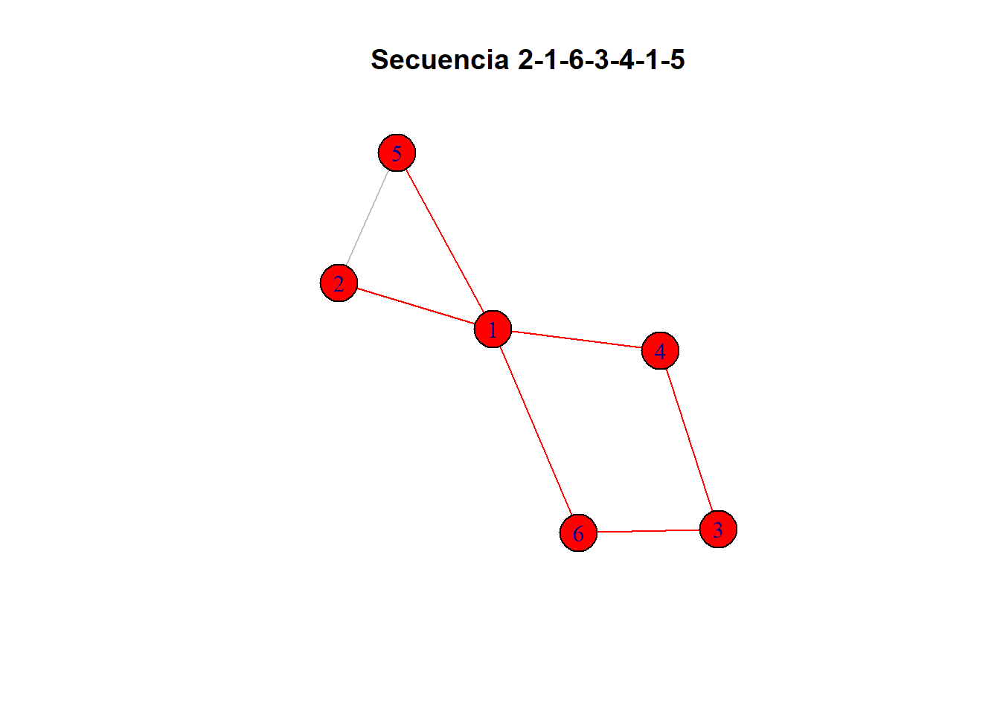
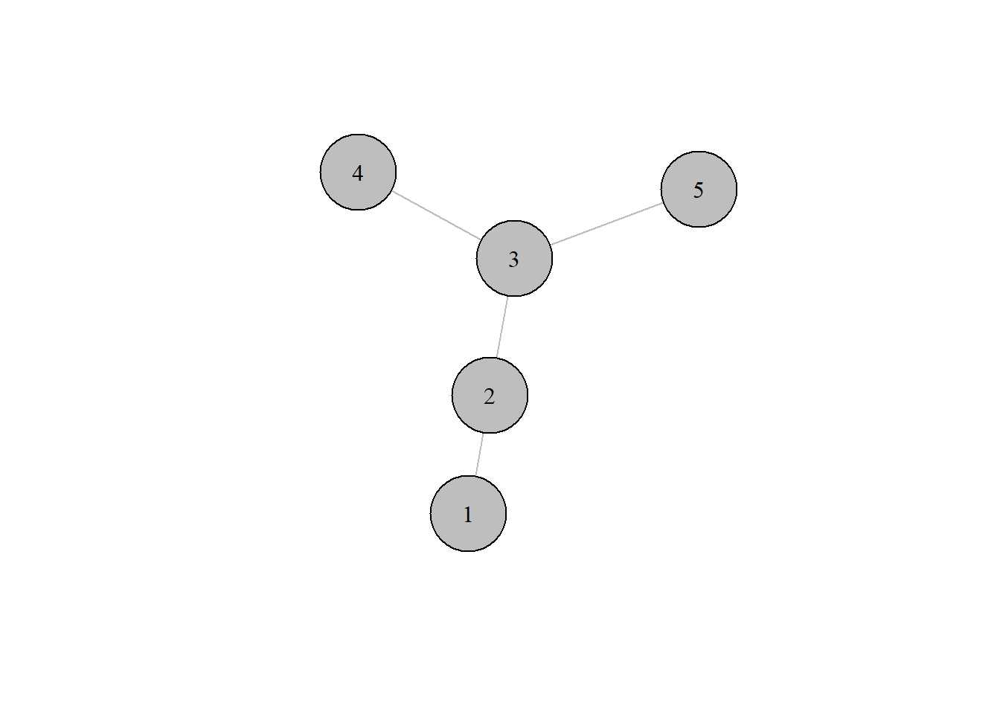
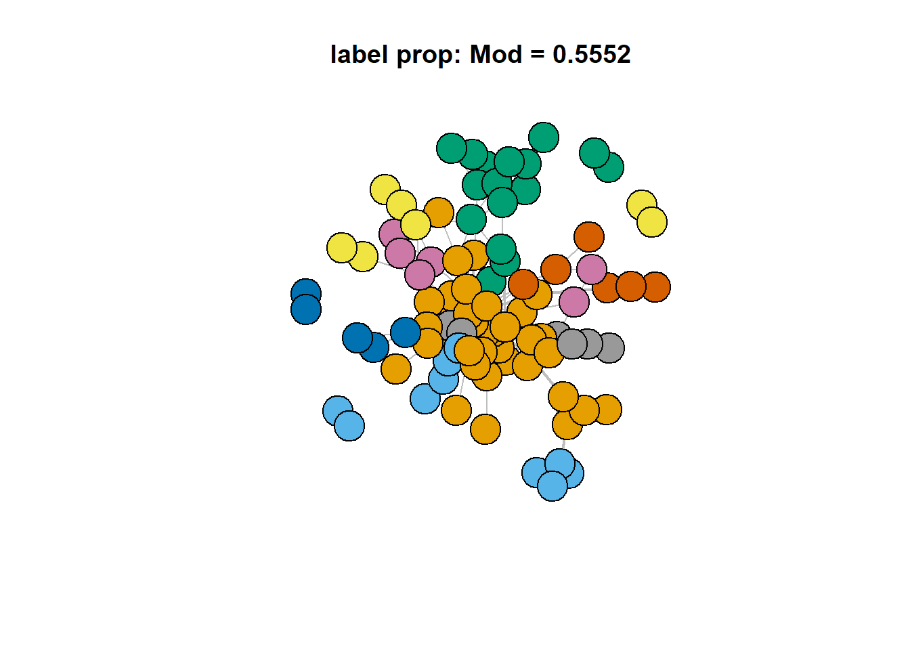
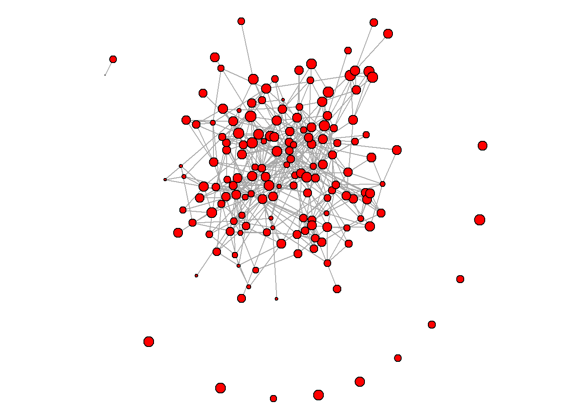

Taller 2
Punto 1
El grado de un nodo en una red tanto dirigida como no dirigida se puede calcular fácilmente a partir de la matriz de adyacencia \(\mathbf{Y}=[y_{i,j}]\). El out-degree \(d_i^{\text{out}}\) y el in-degree \(d_i^{\text{in}}\) del nodo \(i\) se pueden calcular respectivamente como: \[ d_i^{\text{out}} = \sum_{j:j\neq i} y_{i,j} \qquad\text{y}\qquad d_i^{\text{in}} = \sum_{j:j\neq i} y_{j,i} \] Muestre que si la red es no dirigida entonces \(d_i^{\text{out}} = d_i^{\text{in}}\).
Si la red no es dirigida, \(Y = [y_{ij}]\) es simétrica, así \(Y = [y_{ij}] = [y_{ji}] = Y^T\), entonces:
\[ d_i^{\text{out}} = \sum_{j:j \neq i} y_{i,j}= \sum_{j:j \neq i} y_{j,i} = d_i^{\text{in}} \]
Punto 2
Tanto para redes dirigidas como no dirigidas, se define la media global de las interacciones como \[ \bar{y}=\frac{1}{n(n-1)}\sum_{i,j:i\neq j} y_{i,j} \] donde \(\mathbf{Y}=[y_{i,j}]\) es la matriz de adyacencia de la red correspondiente. Tal estadístico corresponde a una descripción muy rudimentaria acerca de la plausibilidad de observar una relación entre dos nodos cualesquiera, dado que no tiene en cuenta la heterogeneidad nodal (algunos nodos son más propensos a enviar/recibir más relaciones).
a. Muestre que para relaciones no dirigidas la media global \(\bar{y}\) es igual a la media tanto de la parte triangular superior de \(\mathbf{Y}\) como de la parte triangular inferior de \(\mathbf{Y}\).
Como la red es no dirigida, \(Y = [y_{i,j}] = [y_{j,i}] = Y^T\), por lo tanto: \[\sum_{i,j: i > j} y_{i,j} = \sum_{i,j: i < j} y_{i,j}\] Así: \[ \bar{y}_{\text{sup}} = \frac{2}{n(n-1)} \sum_{i,j: i > j} y_{i,j} = \frac{2}{n(n-1)} \sum_{i,j: i < j} y_{i,j} = \bar{y}_{\text{inf}} \]
Por otro lado, \[\sum_{i,j: j \neq i} y_{ij}\] es una suma de 0’s y 1’s sobre toda la matriz \(Y\), entonces \[ \frac{1}{2} \sum_{i,j: i \neq j} y_{i,j} = \sum_{i,j: i < j} y_{i,j} = \sum_{i,j: i > j} y_{j,i} \] Luego,
\[ \bar{y}=\frac{1}{n(n-1)}\sum_{i,j:i\neq j} y_{i,j} = \frac{2}{n(n-1)} \sum_{i,j: i > j} y_{i,j} = \frac{2}{n(n-1)} \sum_{i,j: i <j} y_{i,j} \]
b. Muestre que tanto para relaciones dirigidas como no dirigidas la media global corresponde a la densidad de la red.
Redes no dirigidas
Para un subgrafo H, la densidad se define como \[ \text{den}(H) = \frac{|E_H|}{|V_H|(|V_H|-1)/2} \] En una red no dirigida, la cantidad de aristas se puede calcular como la suma de la matriz triangular superior o inferior de la matriz de adyacencia Y: \[ |E_H| = \sum_{i,j: i>j} y_{i,j} \] Por otro lado, \(|V_H|\) corresponde a la cantidad de vértices del grafo, que es igual al número de filas (n) o columnas (n) de la matriz de adyacencia.
\[ \text{den}(H) = \frac{2|E_H|}{|V_H|(|V_H|-1)} = \frac{2}{n(n-1)} \sum_{i,j:i<j} y_{i,j} \] Que, por el resultado anterior, es igual a: \[ \bar{y}=\frac{1}{n(n-1)}\sum_{i,j:i\neq j} y_{i,j} \] Redes dirigidas
En una red no dirigida, la cantidad de aristas se puede calcular como la suma de la matriz de adyacencia Y: \[ \sum_{i,j:i \neq j} y_{ij} \] y \(|V_H|=n\) como en el caso de una red no dirigida.
Así: \[ \text{den}(H) = \frac{|E_H|}{|V_H|(|V_H|-1)} = \frac{1}{n(n-1)} \sum_{i,j:i \neq j} y_{i,j} = \bar{y} \]
c. Muestre que tanto para relaciones dirigidas como no dirigidas se tiene que \((n-1)\bar{y} = \bar{d}^{\text{out}}=\bar{d}^{\text{in}}\). Es decir, el grado promedio tanto de entrada como de salida son iguales y a su vez equivalentes la densidad.
Redes no dirigidas \[ (n-1) \bar{y} = (n-1) \frac{1}{n(n-1)} \sum_{i,j: i \neq j} y_{i,j} = \frac{1}{n} \sum_{i,j: i \neq j} y_{i,j} \] \[ = \frac{1}{n} \sum_{i=1}^n \sum_{j=j \neq i} y_{i,j} = \frac{1}{n} \sum_{i=1}^n d_i^{\text{out}} = \bar{d}^{\text{out}} \] según el resultado del punto 1, en una red no dirigida \(d^{in} = d^{out}\), luego \[ \frac{1}{n} \sum_{i=1}^n d_i^{\text{out}} = \frac{1}{n} \sum_{i=1}^n d_i^{\text{in}} \] \[ \bar{d}^{\text{in}} = \bar{d}^{\text{out}} \] Redes dirigidas
\[ d_i^{\text{in}} = \sum_{j: j \neq i} y_{j,i} \]
\[ \bar{d}^{\text{in}} = \frac{1}{n} \sum_{i=1}^n \sum_{j=j \neq i} y_{j, i} = \frac{1}{n} \sum_{i=1}^n \sum_{j=j \neq i} y_{i, j} = \bar{d}^{\text{out}} \] \(\bar{d}^{\text{in}}\) se puede entender como una suma por columnas de la matriz de adyacencia sobre \(n\) y \(\bar{d}^{\text{out}}\) como una suma por filas de la matriz de adyacencia sobre \(n\).
Por otro lado, \[ (n-1) \bar{y} = (n-1) \frac{1}{n(n-1)} \sum_{i,j: i \neq j} y_{i,j} = \frac{1}{n} \sum_{i,j: i \neq j} y_{i,j} \] \[ = \frac{1}{n} \sum_{i=1}^n \sum_{j=j \neq i} y_{i,j} = \frac{1}{n} \sum_{i=1}^n d_i^{\text{out}} = \bar{d}^{\text{out}} = \bar{d}^{\text{in}} \]
Punto 3
Considere un grafo estrella de orden \(n\) y un grafo círculo de orden \(n\). A continuación se representan ambos grafos para \(n=9\). Estos grafos tienen aproximadamente la misma densidad, pero su estructura es muy diferente. Recuerde que la densidad de un grafo se puede calcular como el grado promedio dividido por \(n - 1\).
a. Muestre que para el grafo círculo de orden \(n\) el grado promedio es \(\bar{d} = 2\).
La matriz de adyacencia para un grafo círculo de orden n, sería: \[ Y_{n*n} = \begin{bmatrix} . & 1 & . & . & . & . & . & . & 1 \\ 1 & . & 1 & . & . & . & . & . & . \\ . & 1 & . & 1 & . & . & . & . & . \\ . & . & 1 & . & 1 & . & . & . & . \\ . & . & . & 1 & . & 1 & . & . & . \\ . & . & . & . & 1 & . & 1 & . & . \\ . & . & . & . & . & 1 & . & 1 & . \\ . & . & . & . & . & . & 1 & . & 1 \\ 1 & . & . & . & . & . & . & 1 & . \\ \end{bmatrix} \] En un grafo círculo, cada vértice tiene un grado de \(2\). Luego, la suma de todos los grados es: \[ \sum_{i,j=i \neq j} y_{i,j} = 2n \] El grado promedio es: \[ \bar{d} = (n-1) \bar{y} = (n-1) \frac{1}{n(n-1)} \sum_{i,j: i \neq j} y_{i,j} = \frac{1}{n} 2n = 2 \]
b. Muestre que para el grafo estrella de orden \(n\) el grado promedio es \(\bar{d} = 2\frac{n-1}{n} \rightarrow 2\) cuando \(n\rightarrow\infty\).
La matriz de adyacencia para un grafo estrella de orden n, sería: \[ Y_{n*n} = \begin{bmatrix} . & . & . & . & . & . & . & . & 1 \\ . & . & . & . & . & . & . & . & 1 \\ . & . & . & . & . & . & . & . & 1 \\ . & . & . & . & . & . & . & . & 1 \\ . & . & . & . & . & . & . & . & 1 \\ . & . & . & . & . & . & . & . & 1 \\ . & . & . & . & . & . & . & . & 1 \\ . & . & . & . & . & . & . & . & 1 \\ 1 & 1 & 1 & 1 & 1 & 1 & 1 & 1 & . \\ \end{bmatrix} \] En un grafo estrella, cada vértice tiene una relación con el vértice central \(n\), con excepción del vértice central que tiene \(n-1\) relaciones. Esto implica: \[ |E| = (n-1) + (n-1) = 2n-2 = 2(n-1) = \sum_{i,j: i \neq j} y_{i,j} \] Así, el grado promedio es: \[ \bar{d} = (n-1) \bar{y} = (n-1) \frac{1}{n(n-1)} \sum_{i,j: i \neq j} y_{i,j} = \frac{2(n-1)}{n} \] Cuando \({n \to \infty}\),
\[\bar{d} = 2\frac{n-1}{n} = 2 \frac{n}{n} \frac{1}{n} = 2 \frac{1}{n} \rightarrow 2\]
Punto 4
¿Cuáles de las siguientes secuencias son caminatas en el grafo que se presenta a continuación? ¿Cuáles senderos? ¿Cuáles circuitos? ¿Cuáles ciclos?
a. \(2 - 1 - 6 - 3 - 4\).
g4 <- graph_from_literal(1-2,1-5,6-1,4-1,2-5,3-4,3-6)
# Secuencia 2−1−6−3−4
V_cam1 <- c(2, 1, 6, 3, 4)
E_cam1 <- c("1-2", "1-6", "3-6", "3-4")
V(g4)$color <- ifelse(V(g4)$name %in% V_cam1, "red", "white")
E(g4)$color <- ifelse(apply(ends(g4, E(g4)), 1, function(x) paste(sort(x), collapse="-")) %in% E_cam1, "red", "gray")
set.seed(3312)
plot(g4, edge.arrow.size=1, vertex.size=20, vertex.label.cex=1, main="Secuencia 2−1−6−3−4")Esta secuencia es un sendero, ya que es una caminata abierta que no tiene vertices ni aristas repetidas.
b. \(2 - 1 - 6 - 3 - 4 - 1 - 5\).
# Secuencia 2 - 1 - 6 - 3 - 4 - 1 - 5
V_cam2 <- c(2, 1, 6, 3, 4, 1, 5)
E_cam2 <- c("1-2", "1-6", "1-4", "1-5", "3-6", "3-4")
V(g4)$color <- ifelse(V(g4)$name %in% V_cam2, "red", "white")
E(g4)$color <- ifelse(apply(ends(g4, E(g4)), 1, function(x) paste(sort(x), collapse="-")) %in% E_cam2, "red", "gray")
set.seed(3312)
plot(g4, edge.arrow.size=1, vertex.size=20, vertex.label.cex=1, main="Secuencia 2-1-6-3-4-1-5")
Esta secuencia es un sendero, ya que es una caminata abierta que tiene vertices repetidos, pero no aristas repetidas.
c. \(2 - 1 - 2 - 5 - 1 - 4\).
# Secuencia 2 - 1 - 2 - 5 - 1 - 4
V_cam3 <- c(2, 1, 2, 5, 1, 4)
E_cam3 <- c("1-2", "2-1", "1-4", "1-5", "2-5")
V(g4)$color <- ifelse(V(g4)$name %in% V_cam3, "red", "white")
E(g4)$color <- ifelse(apply(ends(g4, E(g4)), 1, function(x) paste(sort(x), collapse="-")) %in% E_cam3, "red", "gray")
set.seed(3312)
plot(g4, edge.arrow.size=1, vertex.size=20, vertex.label.cex=1, main="Secuencia 2-1-2-5-1-4")
Esta secuencia es una caminata abierta que tiene vertices y aristas repetidas.
Punto 5
Considere el conjunto de datos dado en comtrade.RData (este archivo contiene una arreglo de cuatro dimensiones denominado comtrade), asociado con el crecimiento anual del comercio (diferencia en dólares en escala logarítmica respecto al año 2000). Este conjunto de datos involucra 30 países, 10 años desde 1996 hasta 2005, y 6 clases de productos diferentes, como se muestra a continuación:
load("comtrade.RData")
dimnames(comtrade)[c(1,3,4)][[1]]
[1] "Australia" "Austria" "Brazil"
[4] "Canada" "China" "China, Hong Kong SAR"
[7] "Czech Rep." "Denmark" "Finland"
[10] "France" "Germany" "Greece"
[13] "Indonesia" "Ireland" "Italy"
[16] "Japan" "Malaysia" "Mexico"
[19] "Netherlands" "New Zealand" "Norway"
[22] "Rep. of Korea" "Singapore" "Spain"
[25] "Sweden" "Switzerland" "Thailand"
[28] "Turkey" "United Kingdom" "USA"
[[2]]
[1] "Chemicals"
[2] "Crude materials, inedible, except fuels"
[3] "Food and live animals"
[4] "Machinery and transport equipment"
[5] "Manufact goods classified chiefly by material"
[6] "Miscellaneous manufactured articles"
[[3]]
[1] "1996" "1997" "1998" "1999" "2000" "2001" "2002" "2003" "2004" "2005"#View(comtrade[1,2,,]) # Paises, paises, productos y añoa. Calcule el aumento medio global \(\bar{y}\) a lo largo de los 10 años en bienes manufacturados. Para ello considere la matriz de adyacencia Y dada por:
Y <- apply(X = comtrade[,,c(5,6),], MARGIN = c(1,2), FUN = mean) #Media de años y bienes manufacturados
n <- dim(Y)[1]
Y[which(is.na(Y))] <- 0
#** mean(y) **#
round(sum(Y)/(n*(n-1)),4)[1] 0.0378b. Calcule la media de todas las observaciones de cada fila de Y, es decir, calcule la media fila \(\bar{y}_{i\bullet}=\frac{1}{n-1}\sum_{j:j\neq i} y_{i,j}\) para cada país. Realice una histograma de los promedios fila \(\bar{y}_{i\bullet}\). Los promedios fila caracterizan diferentes niveles de actividad de los nodos en términos de la sociabilidad. ¿Cómo se pueden interpretar los promedios fila \(\bar{y}_{i\bullet}\)?
mfila <- apply(Y, MARGIN = 1, FUN = mean)
mfila <- data.frame(Fila = mfila, row.names = NULL)
#hist(apply(Y, MARGIN = 1, FUN = mean))
ggplot(mfila, aes(x = Fila)) +
geom_histogram(alpha = 0.8, bins = 7, position = "identity", fill="purple", colour = "black",lwd = 0.1,linetype = 1) +
labs(title=expression(paste("Media de observaciones por fila (", bar(y)[i.], ")")), x="Media de crecimiento anual en bienes manufacturados", y="Frecuencia") + mitema +
theme(strip.background=element_rect(color="black",fill="gray80",size=1), strip.text=element_text(face="bold",size=15,vjust=0.5,hjust=0.5,color="black",angle=0))
Los promedios fila indican cuánto aumenta o disminuye, en promedio, el comercio saliente (exportaciones) de bienes manufacturados del país \(i\) hacia los demás países en comparación con el año 2000. De acuerdo al histograma, la mayoría de los paises, en promedio, aumentaron su comercio saliente a menos de 0.05 con respecto al 2000. Por otro lado, un país tuvo un comercio saliente promedio superior al de los demás países, lo que lo posiciona como el mayor exportador en los años de evaluación.
c. Calcule la media de todas las observaciones de cada columna de Y, es decir, calcule la media columna \(\bar{y}_{\bullet j}=\frac{1}{n-1}\sum_{i:i\neq j} y_{i,j}\) para cada país. Realice una histograma de los promedios columna \(\bar{y}_{\bullet j}\). Los promedios columna caracterizan diferentes niveles de actividad de los nodos en términos de la popularidad. ¿Cómo se pueden interpretar los promedios columna \(\bar{y}_{\bullet j}\)?
mcol <- apply(Y, MARGIN = 2, FUN = mean)
mcol <- data.frame(Col = mcol, row.names = NULL)
#hist(apply(Y, MARGIN = 2, FUN = mean))
ggplot(mcol, aes(x = Col)) +
geom_histogram(alpha = 0.8, position = "identity", bins = 7, fill="purple", colour = "black",lwd = 0.1,linetype = 1) +
labs(title=expression(paste("Media de observaciones por columna (", bar(y)[.j], ")")), x="Media de crecimiento anual en bienes manufacturados", y="Frecuencia") + mitema +
theme(strip.background=element_rect(color="black",fill="gray80",size=1), strip.text=element_text(face="bold",size=15,vjust=0.5,hjust=0.5,color="black",angle=0))
Los promedios columna indican cuánto aumenta o disminuye, en promedio, el comercio entrante (importaciones) de bienes manufacturados hacia un país \(i\) desde los demás países en comparación con el año 2000. De acuerdo al histograma, algunos países, en promedio, disminuyeron su comercio entrante con respecto al 2000. Mientras que algunos pocos aumentaron sus importaciones a mas del 0.10 con el respecto al año 2000, lo que los posiciona como los mayores importadores en los años de evaluación.
d. Calcule tanto la media de los promedios fila \(\bar{y}_{i\bullet}\) como la media de los promedios columna \(\bar{y}_{\bullet j}\). Qué se puede concluir acerca de la tendencia local en este caso?
meand <- cbind(round(mean(mfila[,1]), 4), round(mean(mcol[,1]), 4))
colnames(meand) <- c("Media promedios fila", "Media promedios columna")
rownames(meand) <- NULL
kable(meand, align = "c")| Media promedios fila | Media promedios columna |
|---|---|
| 0.0365 | 0.0365 |
La media de los promedios fila y de los promedios columna es igual por como están definidas las medidas. Su valor es de 0.0365, el cual es cercano a 0, lo que indica que hubo un leve nivel de crecimiento económico tanto saliente como entrante de bienes manufacturados en comparación con el año 2000, en la red.
e. Calcule tanto la DE de los promedios fila \(\bar{y}_{i\bullet}\) como la DE de los promedios columna \(\bar{y}_{\bullet j}\). ¿Qué se puede concluir acerca de la heterogeneidad local en este caso?
sde <- cbind(round(sd(mfila[,1]), 4), round(sd(mcol[,1]), 4))
colnames(sde) <- c("DE promedios fila", "DE promedios columna")
rownames(sde) <- NULL
kable(sde, align = "c")| DE promedios fila | DE promedios columna |
|---|---|
| 0.0292 | 0.0396 |
La desviación estándar de los promedios fila es inferior a la desviación estándar de los promedios columna, lo que indica que hay mayor heterogeneidad entre los niveles de importación de cada país que entre los de exportación. Así, en cuanto al nivel de exportación, el comercio saliente de los países dista, en promedio, 0.0292 de la media, mientras que el comercio entrante de los países dista, en promedio, 0.0396 de la media.
f. Calcule el coeficiente de correlación entre los promedios fila \(\bar{y}_{i\bullet}\) y los promedios columna \(\bar{y}_{\bullet j}\). Realice un dispersograma de los promedios columna \(\bar{y}_{\bullet j}\) (eje \(y\)) frente a los promedios fila \(\bar{y}_{i\bullet}\) (eje \(x\)), junto con la recta \(y=x\) como punto de referencia. ¿Qué se puede concluir?
tabf <- cbind(mfila, mcol)
# Coeficiente de correlacion
cat("Coeficiente de correlación:", round(cor(tabf)[1,2], 2))Coeficiente de correlación: 0.7# Grafico
ggplot(tabf,aes(x=Fila,y=Col)) +
geom_point(color="red",shape=16,size=2.5)+
geom_abline(slope = 1, intercept = 0, color = "blue", linetype = "solid", size = 1) +
labs(title="Promedios fila versus promedios columna",x="Promedios exportaciones",y="Promedios importaciones") +
mitema
El coeficiente de correlación lineal entre los promedios fila y los promedios columna es de 0.7, lo que indica que hay una relación lineal alta. Así, si el promedio de exportaciones de un país \(i\) es alto, su promedio de importaciones también lo será. Por otro lado, según el dispersograma, el promedio de las exportaciones y de las importaciones en los países tiende a mantener una magnitud y signo similar que puede ser representada por la recta \(x=y\), por supuesto, con la presencia de ciertos países que parecen no seguir dicha relación.
Punto 6
Considere el conjunto de datos dado en conflict.RData recopilado por Mike Ward y Xun Cao del departamento de Ciencias Políticas de la Universidad de Washington, asociado con datos de conflictos entre países en los años 90. El archivo conflict.RData contiene una lista con tres arreglos, X, Y, y D. X tiene tres campos: population (población en millones), gdp (PIB en millones de dolares) polity (puntuación política, un índice de democracia). Y hace referencia a una matriz \(\mathbf{Y}=[y_{i,j}]\) en la que \(y_{i,j}\) representa el número de conflictos iniciados por el país \(i\) hacia el país \(j\). Finalmente, Des un arreglo de tres dimensiones dimensiones cuya tercera dimensión contiene indices entre cada par de países asociados con: comercio (dimensión 1), importaciones (dimensión 2), organizaciones intergubernamentales (dimensión 3), y distancia geográfica (dimensión 4).
a. Hacer una visualización decorada de la red de conflictos teniendo en cuenta diferentes diseños.
Teniendo en cuenta la fuerza, se determina el tamaño del nodo. Además, los países con índice de democracio mayor que 0 son de color azul claro, mientras que los demás de color azul oscuro.
load("conflict.RData")
g6 <- graph_from_adjacency_matrix(dat$Y, mode = "directed", weighted = TRUE, diag = FALSE)
# Nombres de vértices
V(g6)$name <- rownames(dat$X)
# Graficos interactivos
# Opción 1
#simpleNetwork(data.frame(as_edgelist(g6)))
# Opción 2
nodes <- data.frame(name = V(g6)$name)
nodes$id <- 0:(nrow(nodes) - 1) # IDs numéricos empezando en 0
nodes$pob <- dat$X[,1]
nodes$nodesize <- igraph::degree(g6)
nodes$polity <- ifelse(dat$X[,3] > 0, "polity > 0", "polity < 0")
nodes$gdp <- dat$X[,2]
links <- as_data_frame(g6, what = "edges")
links$source_id <- match(links$from, nodes$name) - 1
links$target_id <- match(links$to, nodes$name) - 1
## Layout
set.seed(1208)
# b<-layout_as_star(g6); c<-layout_as_tree(g6);d<-layout_in_circle(g6);f<-layout_on_grid(g6);g<-layout_on_sphere(g6);i<-layout_with_dh(g6);j<-layout_with_fr(g6);k<-layout_with_gem(g6);l<-layout_with_graphopt(g6);m<-layout_with_kk(g6);n<-layout_with_lgl(g6);o<-layout_with_mds(g6);p<-layout_with_sugiyama(g6)
e<-layout_nicely(g6)
V(g6)$color <- ifelse(dat$X[,3] > 0, "lightblue", "blue")
# Teniendo en cuenta la fuerza
plot(g6, layout = e, vertex.size = 7* sqrt(strength(g6, weights = NA)), vertex.label = NA,
vertex.color = adjustcolor(V(g6)$color, 0.4),
edge.color = adjustcolor("gray", 0.4), edge.arrow.size = 0.3) 
#title(main = "Red de Conflictos", outer = TRUE, line = -2)Teniendo en cuenta el tamaño de la población, se determina el tamaño del nodo. Además, los países con índice de democracio mayor que 0 son de color naranja, mientras que los demás de color azul.
# Teniendo en cuenta la poblacion
forceNetwork(Links = links, Nodes = nodes,
Source = "source_id", Target = "target_id", linkColour = "gray",
NodeID = "name", Group = "polity", Nodesize = "pob",
radiusCalculation="Math.sqrt(d.nodesize)*0.8", fontSize = 20, legend=TRUE,
opacity = 0.9, colourScale = JS("d3.scaleOrdinal(d3.schemeCategory10);"))Teniendo en cuenta el PIB, se determina el tamaño del nodo. Además, los países con índice de democracio mayor que 0 son de color naranja, mientras que los demás de color azul.
# Teniendo en cuenta el PIB
forceNetwork(Links = links, Nodes = nodes,
Source = "source_id", Target = "target_id", linkColour = "gray",
NodeID = "name", Group = "polity", Nodesize = "gdp",
radiusCalculation="Math.sqrt(d.nodesize)*0.5", fontSize = 20, legend=TRUE,
opacity = 0.9, colourScale = JS("d3.scaleOrdinal(d3.schemeCategory10);"))b. Calcule e interprete la media global.
n <- nrow(dat$Y)
cat("Media global:", round(sum(dat$Y)/(n*(n-1)),4))Media global: 0.0182La media global de la red es cercana a 0, lo que indica que hay pocas posibilidades de que dos países tengan alguna relación de conflicto, omitiendo si los países son propensos a recibir u omitir este tipo de relaciones.
c. Obtenga y grafique la distribución del out-degree y del in-degree. Calcule e interprete la media y la desviación estándar de esta distribución.
dout <- igraph::degree(g6, mode = "out")
dtdout <- data.frame(table(factor(dout, levels = 0:names(table(dout))[length(table(dout))])))
colnames(dtdout) <- c("Grado", "Frec")
dtdout[,2] <- dtdout[,2]/n
ggplot(dtdout, aes(x = Grado, weight=Frec)) +
geom_bar(position=position_dodge(),width=0.75, fill= "purple") +
scale_y_continuous(breaks=seq(from=0,to=0.5,by=0.1)) +
scale_x_discrete(breaks=seq(from=0,to=30,by=5)) +
labs(title="Distribución del grado de salida", x="Grado de salida", y="Densidad")+
mitema
din <- igraph::degree(g6, mode = "in")
dtdin <- data.frame(table(factor(din, levels = 0:names(table(din))[length(table(din))])))
colnames(dtdin) <- c("Grado", "Frec")
dtdin[,2] <- dtdin[,2]/n
ggplot(dtdin, aes(x = Grado, weight=Frec)) +
geom_bar(position=position_dodge(),width=0.75, fill= "purple") +
scale_y_continuous(breaks=seq(from=0,to=0.5,by=0.1)) +
scale_x_discrete(breaks=seq(from=0,to=30,by=5)) +
labs(title="Distribución del grado de entrada", x="Grado de entrada", y="Densidad")+
mitema 
meand <- rbind(cbind(round(mean(din), 4), round(mean(dout), 4)), cbind(round(sd(din), 4), round(sd(dout), 4)))
colnames(meand) <- c("Grado de entrada", "Grado de salida")
rownames(meand) <- c("Media", "Desviación estándar")
kable(meand, align = "c")| Grado de entrada | Grado de salida | |
|---|---|---|
| Media | 1.5615 | 1.5615 |
| Desviación estándar | 1.9845 | 3.5894 |
La media del grado de entrada y de salida es de 1.56, lo que indica que, en promedio, los países inician o reciben un conflicto aproximadamente dos veces con otro países. Sin embargo, existe mayor heterogeneidad en las relaciones de conflicto que emiten los países, que entre las que reciben.
Por otro lado, de acuerdo con las distribuciones de los grados de entrada como de salida, pocos países inician o reciben relaciones de conflicto más de 15 veces, por lo que estos países podrían ser centros o autoridades.
d. Calcule el coeficiente de correlación entre los valores del out-degree y el in-degree. Realice un dispersograma de los grados de entrada (eje \(y\)) frente a los grados de salida (eje\(x\)), junto con la recta \(y=x\) como punto de referencia. ¿Qué se puede concluir?
tabd <- cbind(din, dout)
# Coeficiente de correlacion
cat("Coeficiente de correlación:", round(cor(tabd)[1,2], 2))Coeficiente de correlación: 0.6# Grafico
ggplot(tabd,aes(x=dout,y=din)) +
geom_point(color="red",shape=16,size=2.5)+
geom_abline(slope = 1, intercept = 0, color = "blue", linetype = "solid", size = 1) +
labs(title="Grados de entrada versus grados de salida",x="Grados de salida",y="Grados de entrada") +
mitemaEl coeficiente de correlación lineal entre los grados de entrada y de salida es de 0.6, lo que indica que hay una relación lineal moderada. Así, si las relaciones de conflicto que un país inicia hacia otro aumentan, las relaciones de conflicto recibidas también lo hacen, pero de manera moderada.
Por otro lado, según el dispersograma, la mayoría de los países tienen menos de 5 conflictos iniciados y recibidos, pero existen dos países que tienen más de 20 conflictos iniciados hacia otros países y uno de ellos ha recibido 15 relaciones de conflicto.
e. Identifique los países mas activos.
Por grado
# De entrada
topdin <- head(sort(din,decreasing = T),5)
kable(data.frame(Vertice = names(topdin), GradoIn = topdin, row.names = NULL), align = 'c')
# De salida
topdout <- head(sort(dout, decreasing = T), n = 5)
kable(data.frame(Vertice = names(topdout), GradoOut = topdout, row.names = NULL), align = 'c')| Vertice | GradoIn |
|---|---|
| IRQ | 15 |
| USA | 8 |
| HAI | 7 |
| TUR | 6 |
| JPN | 5 |
| Vertice | GradoOut |
|---|---|
| IRQ | 27 |
| JOR | 26 |
| USA | 11 |
| UGA | 7 |
| CHN | 6 |
Teniendo en cuenta el grado de entrada, el pais más activo en cuanto a recibir relaciones de conflicto es IRAQ, pues es el que más paises le han omitido este tipo de relaciones. De acuerdo al grado de salida, los paises más propensos a emitir relaciones de conflicto son IRAQ y JORDANIA, pues son los que más se han dirigido hacia otros paises con relaciones de conflicto.
Por fuerza
# De entrada
topwdin <- head(sort(strength(g6, mode = "in"), decreasing = T), n = 5)
kable(data.frame(Vertice = names(topwdin), FuerzaIn = topwdin, row.names = NULL), align = 'c')
# De salida
topwdout <- head(sort(strength(g6, mode = "out"), decreasing = T), n = 5)
kable(data.frame(Vertice = names(topwdout), FuerzaOut = topwdout, row.names = NULL), align = 'c')| Vertice | FuerzaIn |
|---|---|
| IRQ | 40 |
| USA | 13 |
| GRC | 10 |
| JPN | 10 |
| CHN | 8 |
| Vertice | FuerzaOut |
|---|---|
| IRQ | 30 |
| JOR | 26 |
| TUR | 20 |
| USA | 18 |
| PRK | 16 |
Teniendo en cuenta la fuerza de entrada, los paises más propensos a recibir relaciones de conflicto son IRAQ y USA, pues estos son los que más han recibido relaciones de conflicto desde otros paises. De acuerdo a la fuerza de salida, los paises más propensos a emitir relaciones de conflicto son IRAQ, JORDANIA y TURQUIA pues estos son los que más han iniciado relaciones de conflicto hacia otros paises.
Centros o autoridades
# Centros
hs <- round(igraph::hub_score(graph = g6, scale = T)$vector,2)
head(sort(hs,decreasing = T),5) TUR USA IRN UKG FRN
1.00 0.78 0.64 0.52 0.42 # Autoridades
as <- round(igraph::authority_score(graph = g6, scale = T)$vector, 2)
head(sort(as,decreasing = T),5) IRQ GRC CYP IRN SYR
1.00 0.39 0.14 0.14 0.12 Los países que más relaciones emiten a países centrales en las relciones de conflicto son TURQUIA, USA e IRAN. Mientras que los países que más relaciones reciben de estos países centrales son IRAQ y GRECIA.
Punto 7
Para todos los vértices de los cuatro grafos que se presentan a continuación, calcular el grado y las medidas de centralidad. Para cada grafo completar e interpretar la siguiente tabla. Interpretar los resultados.
# Funcion
fun7 <- function(grafo){
#Grado
d <- igraph::degree(graph = grafo)
#Centralidad de cercanía
clss <- igraph::closeness(graph = grafo, normalized = T)
#Centralidad de intermediación
btw <- igraph::betweenness(graph = grafo, normalized = T)
#Centralidad de propia
ev <- igraph::eigen_centrality(graph = grafo, scale = T)$vector
tabla <- data.frame(
Medida = c("Media", "Desviacion estándar"),
Grado = c(round(mean(d),2), round(sd(d), 2)),
Cercania = c(round(mean(clss),2), round(sd(clss), 2)),
Intermediacion = c(round(mean(btw),2), round(sd(btw), 2)),
Propia = c(round(mean(ev),2), round(sd(ev), 2))
)
return(list(Grado = d, Cercania = clss, Intermediacion = btw, Propia= ev, Tabla = tabla))
}Grafo1
g1 <- graph_from_literal(2-1, 3-1, 4-1, 5-1)
set.seed(123)
plot(g1, vertex.size=35, vertex.color="gray", edge.color="gray", vertex.label.cex=1, vertex.label.color="black")Resumén de vértices y de grafo
G1 = fun7(g1)Warning: The `scale` argument of `eigen_centrality()` is deprecated as of igraph 2.1.1.
ℹ eigen_centrality() will always behave as if scale=TRUE were used.# Resumen vertice
ResV <- rbind(Grado = G1$Grado, Cernacia = round(G1$Cercania, 2), Intermediacion = round(G1$Intermediacion, 2), Propia = round(G1$Propia, 2)
)
ResV <- ResV[, order(as.numeric(colnames(ResV)))]
kable(ResV, align="c")
# Resumen grafo
kable(G1$Tabla, align = "c")| 1 | 2 | 3 | 4 | 5 | |
|---|---|---|---|---|---|
| Grado | 4 | 1.00 | 1.00 | 1.00 | 1.00 |
| Cernacia | 1 | 0.57 | 0.57 | 0.57 | 0.57 |
| Intermediacion | 1 | 0.00 | 0.00 | 0.00 | 0.00 |
| Propia | 1 | 0.50 | 0.50 | 0.50 | 0.50 |
| Medida | Grado | Cercania | Intermediacion | Propia |
|---|---|---|---|---|
| Media | 1.60 | 0.66 | 0.20 | 0.60 |
| Desviacion estándar | 1.34 | 0.19 | 0.45 | 0.22 |
Según la tabla de resumen del grafo, cada nodo tiene en promedio 1 relación con otro nodo.
En promedio, cada nodo es moderadamente cercano a los otros y cada uno dista, en promedio, 0.19 de la medida de cercanía, lo que los hace homogéneos.
En promedio, los nodos tienden a no estar entre otros pares de nodos, pero su medida de intermediación es heterogénea.
En promedio, los nodos están alrededor de nodos que son importantes en la red y cada uno dista, en promedio, 0.22 de la medida, lo que los hace homogéneos.
Grafo 2
g2 <- graph_from_literal(1-2, 2-3, 3-4, 3-5)
set.seed(123)
plot(g2, vertex.size=45, vertex.color="gray", edge.color="gray", vertex.label.cex=1, vertex.label.color="black")
Resumén de vértices y de grafo
G2 = fun7(g2)
# Resumen vertice
ResV <- rbind(Grado = G2$Grado, Cernacia = round(G2$Cercania, 2), Intermediacion = round(G2$Intermediacion, 2), Propia = round(G2$Propia, 2)
)
ResV <- ResV[, order(as.numeric(colnames(ResV)))]
kable(ResV, align="c")
# Resumen grafo
kable(G2$Tabla, align = "c")| 1 | 2 | 3 | 4 | 5 | |
|---|---|---|---|---|---|
| Grado | 1.00 | 2.00 | 3.00 | 1.00 | 1.00 |
| Cernacia | 0.44 | 0.67 | 0.80 | 0.50 | 0.50 |
| Intermediacion | 0.00 | 0.50 | 0.83 | 0.00 | 0.00 |
| Propia | 0.41 | 0.77 | 1.00 | 0.54 | 0.54 |
| Medida | Grado | Cercania | Intermediacion | Propia |
|---|---|---|---|---|
| Media | 1.60 | 0.58 | 0.27 | 0.65 |
| Desviacion estándar | 0.89 | 0.15 | 0.38 | 0.23 |
Según la tabla de resumen del grafo, cada nodo tiene en promedio 1 relación con otro nodo, pero la desviación estándar indica que hay variabilidad de aproximademante una relación entre estos y la media.
En promedio, cada nodo es moderadamente cercano a los otros y cada uno dista, en promedio, 0.15 de la medida de cercanía, lo que los hace homogéneos.
En promedio, los nodos tienden a no estar entre otros pares de nodos, pero su medida de intermediación es heterogénea, por lo que algunos pueden si estarlo.
En promedio, los nodos están alrededor de nodos que son importantes en la red y cada uno dista, en promedio, 0.23 de la medida, lo que los hace homogéneos.
Grafo 3
g3 <- graph_from_literal(1-2, 2-3, 3-4, 4-5)
set.seed(123)
plot(g3, vertex.size=45, vertex.color="gray", edge.color="gray", vertex.label.cex=1, vertex.label.color="black")
Resumén de vértices y de grafo
G3 = fun7(g3)
# Resumen vertice
ResV <- rbind(Grado = G3$Grado, Cernacia = round(G3$Cercania, 2), Intermediacion = round(G3$Intermediacion, 2), Propia = round(G3$Propia, 2)
)
ResV <- ResV[, order(as.numeric(colnames(ResV)))]
kable(ResV, align="c")
# Resumen grafo
kable(G3$Tabla, align = "c")| 1 | 2 | 3 | 4 | 5 | |
|---|---|---|---|---|---|
| Grado | 1.0 | 2.00 | 2.00 | 2.00 | 1.0 |
| Cernacia | 0.4 | 0.57 | 0.67 | 0.57 | 0.4 |
| Intermediacion | 0.0 | 0.50 | 0.67 | 0.50 | 0.0 |
| Propia | 0.5 | 0.87 | 1.00 | 0.87 | 0.5 |
| Medida | Grado | Cercania | Intermediacion | Propia |
|---|---|---|---|---|
| Media | 1.60 | 0.52 | 0.33 | 0.75 |
| Desviacion estándar | 0.55 | 0.12 | 0.31 | 0.23 |
Según la tabla de resumen del grafo, cada nodo tiene en promedio 1 relación con otro nodo, pero la desviación estándar indica que hay variabilidad de aproximademante una relación entre estos y la media.
En promedio, cada nodo es moderadamente cercano a los otros y cada uno dista, en promedio, 0.12 de la medida de cercanía, lo que los hace homogéneos.
En promedio, los nodos tienden a estar moderadamente entre otros pares de nodos y su medida de intermediación es heterogénea, por lo que algunos nodos pueden tener una medida alta.
En promedio, los nodos tienden a estar alrededor de nodos que son importantes en la red y cada uno dista, en promedio, 0.23 de la medida, lo que los hace homogéneos.
Grafo 4
g4 <- graph_from_literal(1-2, 2-3, 3-4, 4-5, 5-1)
set.seed(123)
plot(g4, vertex.size=45, vertex.color="gray", edge.color="gray", vertex.label.cex=1, vertex.label.color="black")Resumén de vértices y de grafo
G4 = fun7(g4)
# Resumen vertice
ResV <- rbind(Grado = G4$Grado, Cernacia = round(G4$Cercania, 2), Intermediacion = round(G4$Intermediacion, 2), Propia = round(G4$Propia, 2)
)
ResV <- ResV[, order(as.numeric(colnames(ResV)))]
kable(ResV, align="c")
# Resumen grafo
kable(G4$Tabla, align = "c")| 1 | 2 | 3 | 4 | 5 | |
|---|---|---|---|---|---|
| Grado | 2.00 | 2.00 | 2.00 | 2.00 | 2.00 |
| Cernacia | 0.67 | 0.67 | 0.67 | 0.67 | 0.67 |
| Intermediacion | 0.17 | 0.17 | 0.17 | 0.17 | 0.17 |
| Propia | 1.00 | 1.00 | 1.00 | 1.00 | 1.00 |
| Medida | Grado | Cercania | Intermediacion | Propia |
|---|---|---|---|---|
| Media | 2 | 0.67 | 0.17 | 1 |
| Desviacion estándar | 0 | 0.00 | 0.00 | 0 |
Según la tabla de resumen del grafo, cada nodo tiene 2 relaciones con otros nodos.
Cada nodo es moderadamente cercano a los otros y todos tienen la misma medida de cercanía.
Los nodos no tienden a estar entre otros pares de nodos y todos tienen la misma medida de intermediación.
Todos los nodos están alrededor de nodos que son importantes en la red.
En general, el grafo que presenta la cualidad de tener nodos que esten alrededor de nodos importantes es el último. Además, también es el grafo que tiene más nodos cercanos de otros.
Punto 8
Considere los datos relacionales acerca de los conflictos internacionales del archivo conflict.RData despúes de simetrizarla débilmente y remover los nodos aislados:
load("conflict.RData")
g8 <- graph_from_adjacency_matrix(dat$Y, mode = "directed", weighted = TRUE)
# Simetrizacion debil
g8 <- as_undirected(g8, mode = "collapse")
is_directed(g8)[1] FALSEV(g8)$name <- rownames(dat$X)
V(g8)$id <- 0:(vcount(g8) - 1) # IDs numéricos empezando en 0
V(g8)$nodesize <- igraph::degree(g8)
V(g8)$polity <- ifelse(dat$X[,3] > 0, "polity > 0", "polity < 0")
# Remover nodos aislados
g8 <- igraph::delete_vertices(g8, which(igraph::degree(g8) == 0))
table(igraph::degree(g8))
1 2 3 4 5 6 7 8 14 27 29
29 16 15 13 4 7 2 2 1 1 1 a. Hacer una visualización de la red.
# Interactivo
links <- as_data_frame(g8, what = "edges")
links$source_id <- match(links$from, V(g8)$name) - 1
links$target_id <- match(links$to, V(g8)$name) - 1
nodes <- data.frame(name = V(g8)$name)
nodes$id <- V(g8)$id # IDs numéricos empezando en 0
nodes$nodesize <- V(g8)$nodesize
nodes$polity <- V(g8)$polity
# Teniendo en cuenta el grado
forceNetwork(Links = links, Nodes = nodes,
Source = "source_id", Target = "target_id", linkColour = "gray",
NodeID = "name", Group = "polity", Nodesize = "nodesize",
radiusCalculation="Math.sqrt(d.nodesize)*3", fontSize = 20, legend=TRUE,
opacity = 0.9, colourScale = JS("d3.scaleOrdinal(d3.schemeCategory10);"))b. Caracterizar local y estructuralmente la red, en términos de la distancia, la centralidad, la cohesión, la conectivaidad, y el agrupamento. Utilizar todas las métricas disponbles. C. Interpretar los resultados
Distancia
# Matriz de Distancias
D <- distances(graph = g8, v = V(g8), to = V(g8))
# Diámetro
cat("La distancia más larga entre los países del grafo es de:" , diameter(g8), "\n")La distancia más larga entre los países del grafo es de: 18 # Sendero del diametro
d <- get_diameter(g8)
cat("Los países que se deben recorrer en el sendero del diametro son:", "\n")Los países que se deben recorrer en el sendero del diametro son: d+ 11/91 vertices, named, from 33866a5:
[1] CAM THI MYA BNG JOR USA VEN COL NIC SAL HON# Visualización del diámetro
V(g8)$color <- "white"
E(g8)$color <- "grey"
E(g8)$width <- 1
V(g8)[d]$color <- "red"
E(g8, path = d)$color <- "red"
E(g8, path = d)$width <- 2
set.seed(123)
plot(g8, vertex.label= NA)# Distancia geodésica promedio
resumen <- NULL
resumen <- rbind(resumen, round(mean_distance(g8),3))
colnames(resumen) <- "Grafo"
cat("La distancia geodésica promedio es de", round(mean_distance(g8),3), "\n" )La distancia geodésica promedio es de 5.072 En promedio, cada país está separado de los demás en 5.
# Distribución de las distancias
senderos <- distance_table(g8)$res
names(senderos) <- 1:length(senderos)
barplot(prop.table(senderos), xlab = "Distancia geodésica", ylab = "F. Relativa", border = "grey", col = "grey", main = "Distribución de distancias geodésicas")De acuerdo al gráfico, la distribución de las distancias entre los países se acumula en un rango de 1 a 7
Centralidad
# Grado de cada vertice
d <- igraph::degree(g8, mode = "all")
head(sort(d, decreasing = T), n = 5)IRQ JOR USA CHN UGA
29 27 14 8 8 Los países que más se han relacionado con diferentes países en relaciones de conflicto son IRAQ y JORDANIA.
resumen <- rbind(resumen, round(mean(d),3))
cat("El grado promedio del grafo es de:", round(mean(d),2), "\n")El grado promedio del grafo es de: 3.52 cat("La desviación del grado es de:", round(sd(d),2), "\n")La desviación del grado es de: 4.29 En promedio, cada país está involucrado en relaciones de conflicto con tres paises, pero los grados de los nodos tienden a ser heterogeneos según la desviación estándar.
#Distribución del grado
dd <- degree_distribution(g8)
#Visualización
par(mfrow = c(1,2))
plot(NA, NA, type = "n", xlim = c(0,30), ylim = c(0,0.2), xlab = "Grado", ylab = "Densidad", main = "Distribución de grado")
hist(d, freq = F, col = "cyan", border = "royalblue", add = T)
plot((0:max(d))[dd != 0], dd[dd != 0], log = "xy", pch = 16, col = adjustcolor("royalblue", 0.5), xlab = "Log-grado", ylab = "Log-densidad", main = "Distribución de grado (log-log)")La distribución del grado es sesgada a la derecha, por lo que la mayoría de países tienen relaciones de conflicto con menos de 5 países.
# Fuerza de cada vertice
wd <- strength(g8)
head(sort(wd, decreasing = T), n = 5)IRQ USA JOR TUR PRK
70 31 27 27 23 Los países que mayor cantidad de conflictos tienen son IRAQ y USA.
resumen <- rbind(resumen, round(mean(wd),2))
cat("La fuerza promedio del grafo es de:", round(mean(wd),2), "\n")La fuerza promedio del grafo es de: 6.7 En promedio, los países tienen 7 relaciones de conflicto con los demás países.
# Grado promedio de los vecinos más cercados de orden 1
mnd <- knn(graph = g8, vids = V(g8))$knn
cat("El grado promedio de los vecinos más cercados de orden 1 es de:", mean(d[as.numeric(neighbors(graph = g8, v = 1))]))El grado promedio de los vecinos más cercados de orden 1 es de: 10En promedio, los países que están directamente conectados con otro país, tienen relaciones de conflicto con 10 países.
# Cercanía
clss <- igraph::closeness(g8, normalized = TRUE)
head(sort(clss, decreasing = T), n = 5)MAL MZM SIN SWA LES
1.0 1.0 1.0 1.0 0.5 Los países más cercanos a otros países son Malasia, Mozambique, Singapur y Suazilandia.
resumen <- rbind(resumen, round(mean(clss), 3))
cat("La cercanía promedio del grafo es de: ", round(mean(clss), 2), "\n")La cercanía promedio del grafo es de: 0.26 En promedio, los países en la red de conflictos no presentan tanta cercanía unos entre otros.
# Intermediación
btw <- igraph::betweenness(g8, normalized = TRUE)
head(sort(btw, decreasing = T), n = 5) JOR USA IRQ VEN CHA
0.4811380 0.2441667 0.1539473 0.1338327 0.1292385 El país JORDANIA es un país moderadamente importante en la red, pues se encuentra en las relaciones de conflicto entre otros pares de países.
resumen <- rbind(resumen, round(mean(btw), 3))
cat("La intermediación promedio del grafo es de: ", round(mean(btw), 2), "\n")La intermediación promedio del grafo es de: 0.03 En promedio, los países de la red no están ubicados entre las relaciones de conflicto de los demás países.
# Centralidad propia
ev <- igraph::eigen_centrality(g8)$vector
head(sort(ev, decreasing = T), n = 5) IRQ TUR USA IRN GRC
1.0000000 0.6101628 0.6036670 0.4512958 0.3660738 Los países que tienen relaciones de conflicto con más países centrales son IRAQ, TURQUIA y USA.
resumen <- rbind(resumen, round(mean(ev), 3))
cat("La centralidad propia promedio del grafo es de: ", round(mean(ev), 2), "\n")La centralidad propia promedio del grafo es de: 0.08 En promedio, los países no tienen relaciones de conflicto con países centrales.
Cohesión
# Clan
table(sapply(X = cliques(graph = g8, min = 1, max = 10), FUN = length))
1 2 3 4
91 160 67 9 En la red hay 67 triadas que conforman un grafo completo y 9 cliques de tamaño 4.
# Clanes máximos
largest_cliques(graph = g8)[[1]]
+ 4/91 vertices, named, from 33866a5:
[1] TUR IRQ JOR GRC
[[2]]
+ 4/91 vertices, named, from 33866a5:
[1] TUR IRQ JOR SYR
[[3]]
+ 4/91 vertices, named, from 33866a5:
[1] UGA RWA DRC ANG
[[4]]
+ 4/91 vertices, named, from 33866a5:
[1] PRK CHN ROK JPN
[[5]]
+ 4/91 vertices, named, from 33866a5:
[1] QAT IRQ SAU JOR
[[6]]
+ 4/91 vertices, named, from 33866a5:
[1] USA IRQ JOR CAN
[[7]]
+ 4/91 vertices, named, from 33866a5:
[1] USA IRQ JOR SYR
[[8]]
+ 4/91 vertices, named, from 33866a5:
[1] SPN CAN JOR IRQ
[[9]]
+ 4/91 vertices, named, from 33866a5:
[1] SYR IRQ JOR ISRHay 9 clanes máximos. Es posible observar que IRAQ está presente en la mayoría de estos.
# Clan máximo
clique_num(graph = g8)[1] 4resumen <- rbind(resumen, clique_num(graph = g8))
cat("El tamaño del clan máximo es de 4 países \n")El tamaño del clan máximo es de 4 países # Densidad
dens <- edge_density(g8)
resumen <- rbind(resumen, round(dens, 3))
cat("La densidad del grafo es de: ", round(dens,2))La densidad del grafo es de: 0.04Dado que la densidad de la red es de 0.04, la red está muy alejada de que todos los países tengan relaciones de conflicto con todos los demás.
# Transitividad global
# Número de triángulos por vértice
head(sort(count_triangles(graph = g8), decreasing = T), n = 5)[1] 37 33 10 7 7Hay 2 países que están en más de 30 triangulos en la red.
tr <- transitivity(graph = g8, type = "global")
resumen <- rbind(resumen, round(tr, 3))
cat("La transitividad del grafo es de: ", round(tr,2))La transitividad del grafo es de: 0.16Existe baja propensión de que las triplas de la red de conflictos formen triángulos, pues la cuantificación del coeficiente de agrupamiento es de 0.16.
# Transitividad local
head(sort(transitivity(graph = g8, type = "local"), decreasing = T), n = 15)AFG BAH CON HON ISR ITA MOR OMA PHI QAT ROK SAL SPN ZIM SYR
1.0 1.0 1.0 1.0 1.0 1.0 1.0 1.0 1.0 1.0 1.0 1.0 1.0 1.0 0.7 De acuerdo a esto, hay al menos 10 países que tienen países vecinos propensos a ser clanes.
Conectividad
cat("El grafo está conectado debilmente: ", is_connected(graph = g8, mode = "weak"), "\n")El grafo está conectado debilmente: FALSE Todos los países no son accesibles desde todos los demás en esta red de conflictos.
#k-conectividad
vertex_connectivity(g8)[1] 0Si se remueve un vértice, el grafo restante no es conectado.
# arista-conectividad
edge_connectivity(g8)[1] 0Si se remueve una relación, el grafo restante no es conectado.
# puntos de articulación
head(articulation_points(g8), n = 5)+ 5/91 vertices, named, from 33866a5:
[1] USA GHA SIE NIG NIRSi se remueve algún país como USA o NIGERIA, el grafo queda desconectado.
componentes <- decompose(g8)
cat("Hay ", length(componentes), "componentes conectadas en el grafo \n")Hay 5 componentes conectadas en el grafo # tamaño de la componte gigante
table(sapply(X = componentes, FUN = vcount))
2 83
4 1 Cuatro componentes tienen dos países y la componente gigante tiene 83.
max(sapply(X = componentes, FUN = vcount))/vcount(g8)[1] 0.9120879La componente gigante tiene el 91 % de los países de la red.
# componente gigante
g8_gc <- decompose(g8)[[1]]
# vértice-conectividad
vertex_connectivity(g8_gc)[1] 1# arista-conectividad
edge_connectivity(g8_gc)[1] 1Se requiere la eliminación de un solo país o una sola relación para dividir el componente gigante en componentes adicionales.
# puntos de articulación
g8_cv <- articulation_points(g8_gc)
length(g8_cv)[1] 22Hay 22 países que hacen parte de la componente gigante, que al removerlos, desconectarían el grafo.
# Proporcion nodos
round(length(g8_cv)/vcount(g8_gc),2)[1] 0.27Lo que corresponde al 27% de los países de la componente gigante.
Agrupación
Se prueban diferentes algoritmos para ser comparados con el método rand.
# Algoritmos
set.seed(1234)
nc <- layout_nicely(g8)
E(g8)$color <- "gray"
igraph_options(vertex.size =18)
kc_label_prop <- cluster_label_prop(g8)
plot(g8, vertex.label = NA, layout = nc, vertex.color = kc_label_prop$membership, main = paste0("label prop: ", "Mod = ", round(modularity(kc_label_prop), 4)))
kc_optimal <- cluster_optimal(g8)
plot(g8, vertex.label = NA, layout = nc, vertex.color = kc_optimal$membership, main = paste0("optimal: ", "Mod = ", round(modularity(kc_optimal), 4)))
kc_walktrap <- cluster_walktrap(g8)
plot(g8, vertex.label = NA, layout = nc, vertex.color = kc_walktrap$membership, main = paste0("walktrap: ", "Mod = ", round(modularity(kc_walktrap), 4)))
kc_louvain <- cluster_louvain(g8)
plot(g8, vertex.label = NA, layout = nc, vertex.color = kc_louvain$membership, main = paste0("louvain: ", "Mod = ", round(modularity(kc_louvain), 4)))
kc_infomap <- cluster_infomap(g8)
plot(g8, vertex.label = NA, layout = nc, vertex.color = kc_infomap$membership, main = paste0("infomap: ", "Mod = ", round(modularity(kc_infomap), 4)))
kc_edge <- cluster_edge_betweenness(g8)
plot(g8, vertex.label = NA, layout = nc, vertex.color = kc_edge$membership, main = paste0("edge betweennness: ", "Mod = ", round(modularity(kc_edge), 4)))
kc_fast_greedy <- cluster_fast_greedy(g8)
plot(g8, vertex.label = NA, layout = nc, vertex.color = kc_fast_greedy$membership, main = paste0("fast greedy: ", "Mod = ", round(modularity(kc_fast_greedy), 4)))
kc_leading_eigen <- cluster_leading_eigen(g8)
plot(g8, vertex.label = NA, layout = nc, vertex.color = kc_leading_eigen$membership, main = paste0("leading eigen: ", "Mod = ", round(modularity(kc_leading_eigen), 4)))
# comparación usando el índice de rand
algoritmos <- list(
fast_greedy = kc_fast_greedy$membership,
leading_eigen = kc_leading_eigen$membership,
walktrap = kc_walktrap$membership,
louvain = kc_louvain$membership,
label_prop = kc_label_prop$membership,
optimal = kc_optimal$membership,
infomap = kc_infomap$membership,
edge_betweenness = kc_edge$membership
)
comp <- expand.grid(
metodo1 = names(algoritmos),
metodo2 = names(algoritmos),
stringsAsFactors = FALSE
)
# Aplicar el Índice de Rand
comp$rand <- mapply(function(m1, m2) {
compare(algoritmos[[m1]], algoritmos[[m2]], method = "rand")
}, comp$metodo1, comp$metodo2)
# Mostrar resultados como matriz
matriz <- with(comp, tapply(rand, list(metodo1, metodo2), mean))
kable(round(matriz, 3), align = "c")| edge_betweenness | fast_greedy | infomap | label_prop | leading_eigen | louvain | optimal | walktrap | |
|---|---|---|---|---|---|---|---|---|
| edge_betweenness | 1.000 | 0.915 | 0.905 | 0.925 | 0.877 | 0.915 | 0.918 | 0.873 |
| fast_greedy | 0.915 | 1.000 | 0.956 | 0.938 | 0.874 | 1.000 | 0.996 | 0.910 |
| infomap | 0.905 | 0.956 | 1.000 | 0.942 | 0.869 | 0.956 | 0.955 | 0.913 |
| label_prop | 0.925 | 0.938 | 0.942 | 1.000 | 0.873 | 0.938 | 0.938 | 0.910 |
| leading_eigen | 0.877 | 0.874 | 0.869 | 0.873 | 1.000 | 0.874 | 0.876 | 0.894 |
| louvain | 0.915 | 1.000 | 0.956 | 0.938 | 0.874 | 1.000 | 0.996 | 0.910 |
| optimal | 0.918 | 0.996 | 0.955 | 0.938 | 0.876 | 0.996 | 1.000 | 0.913 |
| walktrap | 0.873 | 0.910 | 0.913 | 0.910 | 0.894 | 0.910 | 0.913 | 1.000 |
Dado que los índices de Rand entre las agrupaciones superan el 0.8, las particiones generadas por los algoritmos son bastante similares, lo que indica que las segmentaciones de nodos no presentan variaciones significativas entre ellos.
Resumen de medidas estructurales
rownames(resumen) <- c("Distancia media", "Grado medio", "Fuerza media", "Cercanía media", "Intermediación media", "Cercanía propia media", "Número clan", "Densidad", "Transitividad")
kable(resumen, align = "c")| Grafo | |
|---|---|
| Distancia media | 5.072 |
| Grado medio | 3.516 |
| Fuerza media | 6.700 |
| Cercanía media | 0.260 |
| Intermediación media | 0.027 |
| Cercanía propia media | 0.082 |
| Número clan | 4.000 |
| Densidad | 0.039 |
| Transitividad | 0.163 |
Punto 9
Sintetizar y replicar los Capítulos 6, 8, y 9 de Luke, D. A. (2015).
Capítulo 6 - Graficos avanzados de redes
Aunque los paquetes statnet e igraph ofrecen funcionalidades avanzadas para la representación de redes, no siempre cumplen con todos los requerimientos analíticos o de presentación. En muchos casos, los investigadores en el campo de las redes necesitan visualizaciones más especializadas y dinámicas.
Gráficos Interactivos de Redes
Diversos paquetes para el análisis de redes, como UCINet y Pajek, facilitan la creación de gráficos interactivos. Aunque R proporciona un control preciso sobre las visualizaciones, no siempre incluye funcionalidades interactivas de forma nativa. Por lo que se presentan alternativas para generar gráficos interactivos en R y publicarlos en la web.
Redes interactivas simples con tkplot() en igraph
El paquete igraph incluye la función tkplot() para gráficos interactivos simples. Se usa para ajustar las posiciones de los nodos y luego producir un gráfico final no interactivo.
data(Bali)
iBali <- asIgraph(Bali)
Coord <- tkplot(iBali, vertex.size=3,
vertex.label=V(iBali)$role,
vertex.color="darkgreen")
# Editar el gráfico en la ventana gráfica Tk antes
# de ejecutar los siguientes dos comandos.
MCoords <- tk_coords(Coord)
set.seed(1234)
plot(iBali, layout=MCoords, vertex.size=5,
vertex.label=NA, vertex.color="lightblue")Publicación de diagramas interactivos de redes basados en Web
Se están implementando métodos para desarrollar gráficos interactivos basados en la web utilizando frameworks como D3.js y Shiny. El paquete networkD3 permite crear visualizaciones interactivas simples que pueden integrarse en documentos de Shiny o páginas HTML. Por otro lado, el paquete visNetwork, basado en la biblioteca vis.js, proporciona mayores posibilidades de personalización en la apariencia y facilita la incorporación de gráficos en aplicaciones web desarrolladas con Shiny.
La función simpleNetwork() espera los datos de la red en forma de una lista de aristas almacenada en un data.frame.
#library(networkD3)
src <- c("A", "A", "B", "B", "C", "B")
target <- c("B", "C", "C", "D", "B", "C")
net_edge <- data.frame(src, target)
simpleNetwork(net_edge)Para guardar la visualización:
net_D3 <- simpleNetwork(net_edge)
# saveNetwork(net_D3, file = 'Net_test1.html', selfcontained=TRUE)La función forceNetwork() produce graficos más sofisticados.
Se le deben pasar los datos en dos data.frames:
El data.frame de las aristas tendrá los datos de red en formato de matriz de aristas.
El data.frame de los nodos tendrá el ID de nodo y las propiedades de los nodos. Si los nodos tienen identificadores numéricos, deben comenzar en 0.
iBali_edge <- as_edgelist(iBali)
iBali_edge <- iBali_edge - 1
iBali_edge <- data.frame(iBali_edge)
iBali_nodes <- data.frame(NodeID=as.numeric(V(iBali)-1),
Group=V(iBali)$role,
Nodesize=igraph::degree(iBali))
forceNetwork(Links = iBali_edge, Nodes = iBali_nodes,
Source = "X1", Target = "X2",
NodeID = "NodeID", Nodesize = "Nodesize",
radiusCalculation="Math.sqrt(d.nodesize)*3",
Group = "Group", opacity = 0.8,
legend=TRUE)Para guardar el gráfico:
net_D3 <- forceNetwork(Links = iBali_edge,
Nodes = iBali_nodes,
Source = "X1", Target = "X2",
NodeID = "NodeID",Nodesize = "Nodesize",
radiusCalculation="Math.sqrt(d.Nodesize)*3",
Group = "Group", opacity = 0.8,
legend=TRUE)
# saveNetwork(net_D3, file = 'Net_test2.html', selfcontained=TRUE)Usando la función vis.js de la libreria javascript.
Se le deben pasar los datos en dos data.frames:
El data.frame de las aristas tendrá los datos de red en columnas from y to.
El data.frame de los nodos tendrá el ID de nodo y las propiedades de los nodos.
#library(visNetwork)
iBali_edge <- as_edgelist(iBali)
iBali_edge <- data.frame(from = iBali_edge[,1],
to = iBali_edge[,2])
iBali_nodes <- data.frame(id = as.numeric(V(iBali)))
set.seed(123)
visNetwork(iBali_nodes, iBali_edge, width = "100%")Algunas opciones de la libreria son:
iBali_nodes$group <- V(iBali)$role
iBali_nodes$value <- igraph::degree(iBali)
net <- visNetwork( iBali_nodes, iBali_edge,
width = "100%", legend.width=TRUE)
visOptions(net, highlightNearest = TRUE)Las funciones visNetwork() y visOptions() establecen colores predeterminados para cada grupo y permiten que el usuario resalte los nodos individuales y sus vecinos inmediatos al hacer clic en un nodo.
En el ejemplo se agregan botones de navegación que permiten mover la red y acercar o alejar.
net <- visNetwork(iBali_nodes, iBali_edge,
width = "100%", legend=TRUE)
net <- visOptions(net, highlightNearest = TRUE)
net <- visInteraction(net, navigationButtons = TRUE)
#library(htmlwidgets)
#saveWidget(net, "Net_test3.html")Statnet Web: Statnet Interactivo con Shiny
Statnet Web es una aplicación web, basada en las herramientas de análisis de redes de Statnet utilizando Shiny.
#library(statnetWeb)
#run_sw()Diagramas de redes especializados
Existen técnicas especializadas para resaltar aspectos importantes de las redes, como diagramas de arco, diagramas de acordes y mapas de calor.
Diagramas de Arco
Los diagramas de arco se enfocan en el patrón de los enlaces más que en la posición de los nodos. Uso del paquete arcdiagram
#library(devtools)
#remotes::install_github("gastonstat/arcdiagram")
#library(arcdiagram)
#library(UserNetR)
data(Simpsons)
iSimp <- asIgraph(Simpsons)
simp_edge <- get.edgelist(iSimp)
arcplot(simp_edge)
Ajustando colores por subgrupos y tamaño de los nodos de acuerdo al grado.
s_grp <- V(iSimp)$group
s_col = c("#a6611a", "#dfc27d", "#80cdc1", "#018571")
cols = s_col[s_grp]
node_deg <- igraph::degree(iSimp)
arcplot(simp_edge, lwd.arcs=2, cex.nodes=node_deg/2,
labels=V(iSimp)$vertex.names,
col.labels="darkgreen", font=1,
pch.nodes=21, line=1, col.nodes = cols,
bg.nodes = cols, show.nodes = TRUE)
Diagramas de Acordes
Los diagramas de acordes usan un diseño circular para mostrar interrelaciones en una matriz. Son importantes para evaluar redes ponderadas y dirigidas.
Los datos se deben tener en una sociomatriz, con las entradas correspondientes al tamaño del enlace y debe tener nombres asignados a filas y a columnas. El paquete circlize() implementa estos gráficos, permitiendo un gran control sobre la apariencia. Son útiles para redes valoradas y dirigidas.
# library(statnet)
# library(circlize)
data(FIFA_Nether)
FIFAm <- as.sociomatrix(FIFA_Nether, attrname='passes')
names <- c("GK1", "DF3", "DF4", "DF5", "MF6",
"FW7", "FW9", "MF10", "FW11", "DF2", "MF8")
rownames(FIFAm) = names
colnames(FIFAm) = names
FIFAm GK1 DF3 DF4 DF5 MF6 FW7 FW9 MF10 FW11 DF2 MF8
GK1 0 42 67 21 2 27 7 5 2 17 3
DF3 30 0 44 14 42 15 8 7 10 36 29
DF4 38 43 0 57 18 11 7 21 1 7 28
DF5 6 14 47 0 11 50 20 40 1 4 42
MF6 9 28 25 10 0 41 28 37 14 34 21
FW7 4 12 1 21 21 0 15 33 9 25 18
FW9 0 0 1 8 7 12 0 31 16 7 2
MF10 1 11 11 22 43 29 20 0 28 13 21
FW11 3 2 2 3 7 6 11 15 0 21 12
DF2 29 38 8 3 45 38 10 18 26 0 15
MF8 12 25 26 38 23 13 12 32 11 24 0Eliminar los pases menores a 10 para hacer más facil de interpretar el gráfico.
FIFAm[FIFAm < 10 ] <- 0
FIFAm GK1 DF3 DF4 DF5 MF6 FW7 FW9 MF10 FW11 DF2 MF8
GK1 0 42 67 21 0 27 0 0 0 17 0
DF3 30 0 44 14 42 15 0 0 10 36 29
DF4 38 43 0 57 18 11 0 21 0 0 28
DF5 0 14 47 0 11 50 20 40 0 0 42
MF6 0 28 25 10 0 41 28 37 14 34 21
FW7 0 12 0 21 21 0 15 33 0 25 18
FW9 0 0 0 0 0 12 0 31 16 0 0
MF10 0 11 11 22 43 29 20 0 28 13 21
FW11 0 0 0 0 0 0 11 15 0 21 12
DF2 29 38 0 0 45 38 10 18 26 0 15
MF8 12 25 26 38 23 13 12 32 11 24 0set.seed(123)
chordDiagram(FIFAm)Ajuste de parámetros:
Jugadores en la misma posición van a tener el mismo color.
Como la red es dirigida, los pases de salida comienzan más lejos del círculo exterior, lo que facilita ver la diferencia entre los pases enviados y los pases recibidos.
Ordenar a los jugadores por su posición.
set.seed(123)
grid.col <- c("#AA3939",rep("#AA6C39",4), rep("#2D882D",3),rep("#226666",3))
chordDiagram(FIFAm,directional = TRUE, grid.col = grid.col, order=c("GK1","DF2","DF3","DF4","DF5", "MF6","MF8","MF10","FW7", "FW9","FW11"))Mapas de calor
Los mapas de calor resaltan nodos con mayor cantidad de conexiones en redes ponderadas. Se debe crear una sociomatriz que refleje el peso y se debem definir los nombres de filas y columnas.
data(FIFA_Nether)
FIFAm <- as.sociomatrix(FIFA_Nether, attrname='passes')
colnames(FIFAm) <- c("GK1", "DF3", "DF4", "DF5", "MF6", "FW7", "FW9", "MF10", "FW11", "DF2", "MF8")
rownames(FIFAm) <- c("GK1", "DF3", "DF4", "DF5", "MF6", "FW7", "FW9", "MF10", "FW11", "DF2", "MF8")pal <- colorRampPalette(c("#669999", "#003333"))
heatmap(FIFAm[,11:1], Rowv = NA, Colv = NA, col = pal(60), scale = "none")
Creación de diagramas con otros paquetes de R
Ggplot2
Aunque ggplot2 no es un paquete completo de visualización de redes, sus capacidades gráficas avanzadas permiten crear gráficos especializados de redes dirigidas, haciendo relaciones curvos entre cada díada conectada.
edgeMaker <- function(whichRow, len=100, curved = TRUE){
fromC <- layoutCoordinates[adjacencyList[whichRow, 1],]
toC <- layoutCoordinates[adjacencyList[whichRow, 2], ]
graphCenter <- colMeans(layoutCoordinates)
bezierMid <- c(fromC[1], toC[2])
distance1 <- sum((graphCenter - bezierMid)^2)
if(distance1 < sum((graphCenter - c(toC[1], fromC[2]))^2)){
bezierMid <- c(toC[1], fromC[2])
}
bezierMid <- (fromC + toC + bezierMid) / 3
if(curved == FALSE){bezierMid <- (fromC + toC) / 2}
edge <- data.frame(Hmisc::bezier(c(fromC[1], bezierMid[1], toC[1]),
c(fromC[2], bezierMid[2], toC[2]),
evaluation = len))
edge$Sequence <- 1:len
edge$Group <- paste(adjacencyList[whichRow, 1:2], collapse = "-")
return(edge)
}Función bezier() del paquete Hmisc
# library(sna)
# library(ggplot2)
# library(Hmisc)Se deben transformar los datos a un formato de matriz de aristas y se eliminan pases menores a 10.
data(FIFA_Nether)
fifa <- FIFA_Nether
fifa.edge <- as.edgelist.sna(fifa, attrname='passes')
fifa.edge <- data.frame(fifa.edge)
names(fifa.edge)[3] <- 'Value'
fifa.edge <- fifa.edge[fifa.edge$Value > 9, ]
adjacencyList <- fifa.edgeSe usa la función gplot para almacenar las coordenadas de diseño para la función ggplot2.
layoutCoordinates <- gplot(network(fifa.edge))allEdges <- lapply(1:nrow(fifa.edge), edgeMaker, len = 500, curved = TRUE)
allEdges <- do.call(rbind, allEdges)new_theme_empty <- theme_bw()
new_theme_empty$line <- element_blank()
new_theme_empty$rect <- element_blank()
new_theme_empty$strip.text <- element_blank()
new_theme_empty$axis.text <- element_blank()
new_theme_empty$plot.title <- element_blank()
new_theme_empty$axis.title <- element_blank()
new_theme_empty$plot.margin <- structure(c(0, 0, -1, -1),
unit = "lines", valid.unit = 3L, class = "unit")Función ggplot.
La opción scale_colour_gradient controla la intensidad del degradado y la opción scale_size controla la cantidad de conicidad.
set.seed(123)
zpl <- ggplot(allEdges)
zpl <- zpl + geom_path(aes(x = x, y = y, group = Group, colour = Sequence, size = -Sequence))
zpl <- zpl + geom_point(data = data.frame(layoutCoordinates), aes(x = x, y = y), size = 4, pch = 21, colour = "black", fill = "gray")
zpl <- zpl + scale_colour_gradient(low = gray(0), high = gray(9/10), guide = "none")
zpl <- zpl + scale_size(range = c(1/10, 1.5), guide = "none")
zpl <- zpl + new_theme_empty
print(zpl)Capítulo 8 - Subgrupos
Muchas redes sociales del mundo real pueden dividirse en subgrupos de redes densamente conectadas a través de una menor cantidad de aristas, lo que va a ser de gran importancia identificar si se quiere de descubrir el comportamiento de toda la red.
Cohesión social: La cohesión social permite identificar subgrupos de individuos con enlaces fuertes y directos.
Cliques: Un clique es un subgrafo maximamente completo, es decir un subgrafo donde cada vértice puede acceder a los demás a través de una relación directa.
Ejemplo 1.
clqexmp <- graph_from_literal(A:B:C:D--A:B:C:D,D-E,E-F-G-E)
set.seed(123)
plot(clqexmp, vertex.color = "lightblue")Este grafo tiene dos cliques, A, B, C, D y E, F, G. Los cliques relevantes van a ser los de orden igual o superior a 3. Por definición, un clique de orden \(k\) también contiene cliques de orden \(k-1\), \(k-2\), etc.
La función clique_num() muestra el orden del clique más grande.
clique_num(clqexmp)[1] 4La función cliques() retorna una lista de los cliques de un orden mínimo y máximo asignado.
cliques(clqexmp,min=3)[[1]]
+ 3/7 vertices, named, from 4e6f730:
[1] B C D
[[2]]
+ 3/7 vertices, named, from 4e6f730:
[1] E F G
[[3]]
+ 3/7 vertices, named, from 4e6f730:
[1] A B C
[[4]]
+ 4/7 vertices, named, from 4e6f730:
[1] A B C D
[[5]]
+ 3/7 vertices, named, from 4e6f730:
[1] A B D
[[6]]
+ 3/7 vertices, named, from 4e6f730:
[1] A C DLa función max_cliques() es útil cuando hay muchos cliques, pues omite los cliques que hacen parte de cliques de orden mayor.
max_cliques(clqexmp,min=3)[[1]]
+ 3/7 vertices, named, from 4e6f730:
[1] E F G
[[2]]
+ 4/7 vertices, named, from 4e6f730:
[1] A B D CLa función largest_cliques() identifica el clique de orden mayor.
largest_cliques(clqexmp)[[1]]
+ 4/7 vertices, named, from 4e6f730:
[1] A B D CLa siguiente linea de código muestra como se puede obtener el nombre de los vértices, en lugar de sus id’s (como lo hacen las funciones anteriores).
V(clqexmp)[unlist(largest_cliques(clqexmp))]+ 4/7 vertices, named, from 4e6f730:
[1] A B D CDesventajas de los cliques:
Es una definición conservadora de un subgrupo cohesivo, pues requiere que cada vertice este relacionado con todos los demás, lo que podría descartar subgrupos realmente cohesivos por falta de unos pocos enlaces.
Dada su anterior limitación, en redes grandes del mundo real, los cliques no son comunes.
La siguiente simulación muestra lo poco comunes que son los cliques. Se simularon 4 redes con 25, 50, 100 y 500 nodos. Para cada red, el promedio del grado es como máximo 6. La tabla muestra que el número de cliques se mantiene constante a pesar de que el orden de la red aumenta. Además, los cliques son de tamaño pequeño en todos los casos.
set.seed(9679)
g25 <- erdos.renyi.game(25, 75, type="gnm")
g50 <- erdos.renyi.game(50, 150, type="gnm")
g100 <- erdos.renyi.game(100, 300, type="gnm")
g500 <- erdos.renyi.game(500, 1500, type="gnm")
nodes <- c(25,50,100,500)
lrgclq <- c(clique_num(g25),clique_num(g50), clique_num(g100),clique_num(g500))
numclq <- c(length(cliques(g25,min=3)),length(cliques(g50,min=3)),
length(cliques (g100,min=3)),length(cliques(g500,min=3)))
clqinfo <- data.frame (Nodes=nodes,Largest=lrgclq,
Number=numclq)
clqinfo Nodes Largest Number
1 25 4 34
2 50 3 36
3 100 3 36
4 500 3 38#kable(clqinfo, align = "c")k-cores
Es una variación de la idea de los cliques. Un k-core es un subgrafo maximal donde cada vertice está conectado con al menos k vertices. Una de las ventajas del k-core es que es anidado, es decir cada miembro de un 4-core es miembro de un 3-core y así sucesivamente.
Ejemplo DHHS
# library(statnet)
# install.packages("remotes")
# remotes::install_github("DougLuke/UserNetR")
# library(UserNetR)
# data(DHHS)
# library(intergraph)
iDHHS <- asIgraph(DHHS)
edge_density(iDHHS)[1] 0.312369La función subgraph.edges() selecciona solo las aristas con atributos 3 o 4.
iDHHS<-subgraph_from_edges(iDHHS,E(iDHHS)[collab>2])
edge_density(iDHHS)[1] 0.1533688La función graph.coreness() identifica la estructura k-core
coreness<-coreness(iDHHS)
table(coreness)coreness
1 2 3 4 5 6
7 6 2 5 2 26 maxCoreness<-max(coreness)
maxCoreness[1] 6Grafica de la red teniendo en cuenta la estrcutura k-core
# Vname <- get.vertex.attribute(iDHHS, name= 'vertex.names',index=V(iDHHS))
# V(iDHHS)$name<-Vname
V(iDHHS)$color<-coreness+1
op <-par(mar=rep(0,4))
set.seed(123)
plot(iDHHS,vertex.label.cex=0.8)par(op)Agregar labels que indiquen el valor k-core
colors <-rainbow(maxCoreness)
op <-par(mar=rep(0,4))
plot(iDHHS,vertex.label=coreness,vertex.color=colors[coreness])par(op)El centro de la red está compuesta principalmente por los k-core más altos.
Para examinar los patrones de cada subgrupo, se van a ir despegando los k-cores del más bajo al más alto con la función induced.subgraph()
V(iDHHS)$name <- coreness
V(iDHHS)$color <- colors[coreness]
iDHHS1_6 <- iDHHS
iDHHS2_6 <- induced_subgraph(iDHHS, vids= which(coreness > 1))
iDHHS3_6 <- induced_subgraph(iDHHS,vids = which(coreness > 2))
iDHHS4_6 <- induced_subgraph(iDHHS,vids = which(coreness > 3))
iDHHS5_6 <- induced_subgraph(iDHHS,vids = which(coreness > 4))
iDHHS6_6 <- induced_subgraph(iDHHS,vids = which(coreness > 5))
lay <- layout.fruchterman.reingold(iDHHS)
op <- par (mfrow=c(3,2),mar = c(3,0,2,0))
set.seed(123)
plot (iDHHS1_6,layout=lay,main="All k-cores")
plot (iDHHS2_6,layout=lay[which(coreness > 1),],main="k-cores 2-6")
plot (iDHHS3_6,layout=lay[which (coreness > 2),],main="k-cores 3-6")
plot (iDHHS4_6,layout=lay [which (coreness > 3),],main="k-cores 4-6")
plot (iDHHS5_6,layout=lay[which (coreness > 4),],main="k-cores 5-6")
plot (iDHHS6_6,layout=lay[which(coreness > 5),],main="k-cores 6-6")par(op)Detección comunitaria
Tanto k-cores como cliques son ejemplos que para identificar subgrupos dependen del patron de relaciones internas definidas en estos. Sin embargo, existen algoritmos de identificación de subgrupos que detectan grupos de tal manera que hayan muchas relaciones internas y algunas entre otros grupos.
Modularidad
Es una medida del grado en que los nodos presentan agrupamiento, donde hay mayor densidad dentro de los grupos y menos densidad entre ellos.
Puede ser usada para que un algoritmo intente maximizarla y devuelva la mejor clasificación que explique a la red.
Puede ser usada como estadística para cualquier variable de clasificación de nodos.
La modularidad puede variar desde \(\frac{-1}{2}\) a \(1\). Entre más cerca de 1, más agrupación exhibe la red con respecto a la variable de agrupamiento dada.
Ejemplo: Red de 9 nodos con dos atributos que clasifican los nodos en tres grupos.
g1 <- graph_from_literal(A-B-C-A,D-E-F-D,G-H-I-G,A-D-G-A)
V(g1)$grp_good <- c(1,1,1,2,2,2,3,3,3)
V(g1)$grp_bad <- c(1,2,3,2,3,1,3,1,2)
set.seed(123)
op <- par(mfrow=c(1,2))
plot(g1,vertex.color =(V(g1)$grp_good),vertex.size=20, main="Good Grouping")
plot(g1,vertex.color=(V(g1)$grp_bad),vertex.size=20,main="Bad Grouping")
par(op)La agrupación que mejor explica a la red es la de la izquierda, lo que se puede comprobar calculando la modularidad.
modularity(g1,V(g1)$grp_good)[1] 0.4166667modularity(g1,V(g1)$grp_bad)[1] -0.3333333Ejemplo DHHS
library(intergraph)
data(DHHS)
iDHHS <- asIgraph(DHHS)
table(V(iDHHS)$agency)
0 1 2 3 4 5 6 7 8 9 10
2 4 12 2 2 3 2 16 3 5 3 V(iDHHS)[1:10]+ 10/54 vertices, from 519d8a0:
[1] 1 2 3 4 5 6 7 8 9 10modularity(iDHHS,(V(iDHHS)$agency+1))[1] 0.1402264Como la modularidad es de 0.14, entonces la variable agency explica algo del agrupamiento presente en la red.
La modularidad adquiere un significado más útil si se utiliza para compararse con otra medida relevante. Por ejemplo, comparar la estadística usando dos variables nodales distintas.
Ejemplo Moreno
data(Moreno)
iMoreno <- asIgraph(Moreno)
table(V(iMoreno)$gender)
1 2
16 17 modularity(iMoreno,V(iMoreno)$gender)[1] 0.4761342data(Facebook)
Facebook <- upgrade_graph(Facebook)
levels(factor(V(Facebook)$group))[1] "B" "C" "F" "G" "H" "M" "S" "W"grp_num <- as.numeric(factor(V(Facebook)$group))
modularity(Facebook,grp_num)[1] 0.6145798Algoritmos de detección de comunidades
Correr una de las funciones de igraph() que contiene un algoritmo para detección de comunidades:
cw <- cluster_walktrap(iMoreno)
membership(cw) [1] 1 1 1 1 1 1 1 1 3 3 3 5 5 5 5 1 3 2 2 2 4 4 4 2 2 2 2 2 2 2 2 6 6modularity(cw)[1] 0.6181474Se identificaron 6 grupos:
set.seed(1234)
plot(cw, iMoreno)Se puede comparar esta partición generada con alguna partición existente basada en una variable nodal.
Ejemplo DHHS
cw <- cluster_walktrap(iDHHS)
modularity(cw)[1] 0.1653754membership(cw) [1] 4 5 1 1 1 1 1 1 1 1 1 1 1 1 1 1 1 1 1 1 1 1 1 1 1 1 1 3 3 3 3 3 3 3 3 3 3 3
[39] 3 3 3 3 3 2 2 2 2 1 2 1 1 1 1 1table(V(iDHHS)$agency,membership(cw))
1 2 3 4 5
0 0 0 0 1 1
1 4 0 0 0 0
2 12 0 0 0 0
3 2 0 0 0 0
4 2 0 0 0 0
5 3 0 0 0 0
6 2 0 0 0 0
7 0 0 16 0 0
8 0 3 0 0 0
9 3 2 0 0 0
10 3 0 0 0 0Se pueden comparar distintas particiones generadas por algoritmos distintos.
data(Bali)
iBali <- asIgraph(Bali)
cw <- cluster_walktrap(iBali)
modularity(cw)[1] 0.2830688membership(cw) [1] 2 1 2 1 2 2 1 2 2 3 3 3 3 3 2 2 2ceb <- cluster_edge_betweenness(iBali)
modularity(ceb)[1] 0.2387251membership(ceb) [1] 1 1 1 1 1 1 1 1 1 2 2 2 2 2 1 1 1cs <- cluster_spinglass(iBali)
modularity(cs)[1] 0.2966742membership(cs) [1] 3 2 3 1 3 3 2 3 3 1 1 1 1 1 3 3 3cfg <- cluster_fast_greedy(iBali)
modularity(cfg)[1] 0.2629126membership(cfg) [1] 2 2 1 2 1 2 2 1 1 3 3 3 3 3 1 1 1clp <- cluster_label_prop(iBali)
modularity(clp)[1] 0.2387251membership(clp) [1] 1 1 1 1 1 1 1 1 1 2 2 2 2 2 1 1 1cle <- cluster_leading_eigen(iBali)
modularity(cle)[1] 0.2750063membership(cle) [1] 1 1 1 2 1 1 2 1 1 2 2 2 2 2 1 1 1cl <- cluster_louvain(iBali)
modularity(cl)[1] 0.2966742membership(cl) [1] 1 2 1 3 1 1 2 1 1 3 3 3 3 3 1 1 1co <- cluster_optimal(iBali)
modularity(co)[1] 0.2966742membership(co) [1] 1 2 1 3 1 1 2 1 1 3 3 3 3 3 1 1 1Todos los algoritmos identificaron 2 o 3 grupos y el rango de la modularidad fue de 0.24 a 0.30.
Los resultados de la detección de los grupos se pueden comparar utilizando métricas de comparación de clasificación, por ejemplo la estadística Rand ajustada.
table(V(iBali)$role,membership(cw))
1 2 3
BM 0 5 0
CT 1 2 0
OA 2 1 0
SB 0 1 1
TL 0 0 4compare(as.numeric(factor(V(iBali)$role)),cw,method="adjusted.rand")[1] 0.3504908compare(cw,ceb,method="adjusted.rand")[1] 0.6155779compare(cw,cs,method="adjusted.rand")[1] 0.8898148compare(cw,cfg,method="adjusted.rand")[1] 0.6691802Graficos de resultados de la detección grupos con diferentes algoritmos
set.seed(123)
op <-par(mfrow=c(3,2),mar=c(3,0,2,0))
plot(ceb, iBali,vertex.label=V(iBali)$role,main="Edge Betweenness")
plot(cfg, iBali,vertex.label=V(iBali)$role,main="Fastgreedy")
plot(clp, iBali,vertex.label=V(iBali)$role,main="Label Propagation")
plot(cle, iBali,vertex.label=V(iBali)$role,main="Leading Eigenvector")
plot(cs, iBali,vertex.label=V(iBali)$role,main="Spinglass")
plot(cw, iBali,vertex.label=V(iBali)$role,main="Walktrap")par(op)Capítulo 9 - Redes de afiliación
Una red de afiliación es aquella donde los miembros están conectados por su co-pertenencia a un grupo o por su co-participación en algún evento. Por ejemplo, estudiantes que pertenecen a la misma clase pueden considerarse conectados, aunque no sepamos si tienen vínculos sociales directos.
Ejemplo - estudiantes
C1 <- c(1,1,1,0,0,0)
C2 <- c(0,1,1,1,0,0)
C3 <- c(0,0,1,1,1,0)
C4 <- c(0,0,0,0,1,1)
aff.df <- data.frame(C1,C2,C3,C4)
row.names(aff.df) <- c("S1","S2","S3","S4","S5","S6")
kable(aff.df, align = "c")| C1 | C2 | C3 | C4 | |
|---|---|---|---|---|
| S1 | 1 | 0 | 0 | 0 |
| S2 | 1 | 1 | 0 | 0 |
| S3 | 1 | 1 | 1 | 0 |
| S4 | 0 | 1 | 1 | 0 |
| S5 | 0 | 0 | 1 | 1 |
| S6 | 0 | 0 | 0 | 1 |
Esta es una matriz de incidencia, que indica si un estudiante s pertenece a un grupo g. A diferencia de una matriz de adyacencia, la matriz de incidencia no es cuadrada.
Grafos bipartitos En redes de afiliación hay dos tipos de nodos: actores (individuos) y grupos (a los que pertenecen los actores). Las relaciones solo conectan actores con grupos, pero no hay conexiones directas entre actores ni entre grupos.
bn <-graph_from_biadjacency_matrix(aff.df)
plt.x <-c(rep(2,6),rep(4,4))
plt.y <-c(7:2,6:3)
lay <-as.matrix(cbind(plt.x,plt.y))
shapes <-c("circle","square")
colors <-c("blue","red")
plot(bn,vertex.color=colors[V(bn)$type+1],
vertex.shape=shapes[V(bn)$type+1],
vertex.size=10,vertex.label.degree=-pi/2,
vertex.label.dist=1.2,vertex.label.cex=0.9,
layout=lay)Conceptos básicos
Creación de redes de afiliación a partir de matrices de incidencia
En igraph, los grafos bipartitos se crean a partir de matrices de incidencia y, en este caso, las filas se leen como actores y las columnas como grupos o eventos. Además, se tienen dos atributos de vértice: - Nombre del vértice. - Tipo de nodo: type = FALSE para actores o type = TRUE para grupos o eventos.
as_biadjacency_matrix(bn) C1 C2 C3 C4
S1 1 0 0 0
S2 1 1 0 0
S3 1 1 1 0
S4 0 1 1 0
S5 0 0 1 1
S6 0 0 0 1V(bn)$type [1] FALSE FALSE FALSE FALSE FALSE FALSE TRUE TRUE TRUE TRUEV(bn)$name [1] "S1" "S2" "S3" "S4" "S5" "S6" "C1" "C2" "C3" "C4"Creación de redes de afiliación a partir de listas de relaciones
Es común construir redes usando listas de relaciones.
el.df <- data.frame(rbind(c("S1","C1"),
c("S2","C1"),
c("S2","C2"),
c("S3","C1"),
c("S3","C2"),
c("S3","C3"),
c("S4","C2"),
c("S4","C3"),
c("S5","C3"),
c("S5","C4"),
c("S6","C4")))
bn2 <- graph_from_data_frame(el.df,directed=FALSE)
bn2IGRAPH 55d96fb UN-- 10 11 --
+ attr: name (v/c)
+ edges from 55d96fb (vertex names):
[1] S1--C1 S2--C1 S2--C2 S3--C1 S3--C2 S3--C3 S4--C2 S4--C3 S5--C3 S5--C4
[11] S6--C4Sin embargo, el objeto creado no se reconoce como bipartito. Para corregirlo, es necesario especificar manualmente el atributo type.
V(bn2)$type <-V(bn2)$name %in% el.df[,1]
bn2IGRAPH 55d96fb UN-B 10 11 --
+ attr: name (v/c), type (v/l)
+ edges from 55d96fb (vertex names):
[1] S1--C1 S2--C1 S2--C2 S3--C1 S3--C2 S3--C3 S4--C2 S4--C3 S5--C3 S5--C4
[11] S6--C4edge_density(bn)==edge_density(bn2)[1] TRUEVisualización de redes de afiliación
Para visualizar redes de afiliación es útil usar formas y colores que diferencien actores de grupos.
shapes <-c("circle","square")
colors <-c("blue","red")
set.seed(123)
plot(bn,vertex.color=colors[V(bn)$type+1],
vertex.shape=shapes[V(bn)$type+1],
vertex.size=10,vertex.label.degree=-pi/2,
vertex.label.dist=1.2,vertex.label.cex=0.9)Proyecciones
En una red de afiliación, los nodos de cada grupo pueden estar conectados indirectamente a partir de las conexiones entre grupos. Por ejemplo: la clase C3 y C4 están conectadas a través del estudiante S5.
Para analizar conexiones directas, se crean proyecciones que transforman la red en una estructura con un único tipo de nodo, así, os actores se vinculan entre ellos cuando forman parte del mismo grupo y los grupos se enlazan entre sí cuando comparten actores en común.
bn.pr <- bipartite_projection(bn)
bn.pr$proj1
IGRAPH 5651843 UNW- 6 8 --
+ attr: name (v/c), weight (e/n)
+ edges from 5651843 (vertex names):
[1] S1--S2 S1--S3 S2--S3 S2--S4 S3--S4 S3--S5 S4--S5 S5--S6
$proj2
IGRAPH 565187d UNW- 4 4 --
+ attr: name (v/c), weight (e/n)
+ edges from 565187d (vertex names):
[1] C1--C2 C1--C3 C2--C3 C3--C4Cada lista puede ser tratada como un objeto igraph cualquiera.
graph.density(bn.pr$proj1)Warning: `graph.density()` was deprecated in igraph 2.0.0.
ℹ Please use `edge_density()` instead.[1] 0.5333333bn.student <-bn.pr$proj1
bn.class <-bn.pr$proj2
graph.density(bn.student)[1] 0.5333333Obtención de las matrices de adyacencia con pesos:
as_adjacency_matrix(bn.student,sparse=FALSE,attr="weight") S1 S2 S3 S4 S5 S6
S1 0 1 1 0 0 0
S2 1 0 2 1 0 0
S3 1 2 0 2 1 0
S4 0 1 2 0 1 0
S5 0 0 1 1 0 1
S6 0 0 0 0 1 0as_adjacency_matrix(bn.class,sparse=FALSE,attr="weight") C1 C2 C3 C4
C1 0 2 1 0
C2 2 0 2 0
C3 1 2 0 1
C4 0 0 1 0shapes <-c("circle","square")
colors <-c("blue","red")
op <-par(mfrow=c(1,2))
plot(bn.student,vertex.color="blue",
vertex.shape="circle",main="Students",
edge.width=E(bn.student)$weight*2,
vertex.size=15,vertex.label.degree=-pi/2,
vertex.label.dist=1.2,vertex.label.cex=1)
plot(bn.class,vertex.color="red",
vertex.shape="square",main="Classes",
edge.width=E(bn.student)$weight*2,
vertex.size=15,vertex.label.degree=-pi/2,
vertex.label.dist=1.2,vertex.label.cex=1)
par(op)Ejemplo - actores de Hollywood
El dataset hwd del paquete UseNetR contiene una red de afiliación de actores de Hollywood conectados a través de películas. El conjunto de datos incluye a las diez películas más populares (según usuarios de IMDb) de cada año desde 1999 hasta 2014, los diez primeros actores listados en IMDb para cada película, los nombres de películas y actores y cada película incluye el año de lanzamiento, la calificación de usuarios de IMDb y la clasificación de películas según la MPAA.
Análisis de la red
data(hwd)
h1 <- igraph::upgrade_graph(hwd)
h1IGRAPH 9cdab39 UN-B 1365 1600 --
+ attr: name (v/c), type (v/l), year (v/n), IMDBrating (v/n),
| MPAArating (v/c)
+ edges from 9cdab39 (vertex names):
[1] Inception --Leonardo DiCaprio
[2] Inception --Joseph Gordon-Levitt
[3] Inception --Ellen Page
[4] Inception --Tom Hardy
[5] Inception --Ken Watanabe
[6] Inception --Dileep Rao
[7] Inception --Cillian Murphy
+ ... omitted several edgesV(h1)$name[1:10] [1] "Inception"
[2] "Alice in Wonderland"
[3] "Kick-Ass"
[4] "Toy Story 3"
[5] "How to Train Your Dragon"
[6] "Despicable Me"
[7] "Scott Pilgrim vs. the World"
[8] "Hot Tub Time Machine"
[9] "Harry Potter and the Deathly Hallows: Part 1"
[10] "Tangled" V(h1)$type[1:10] [1] TRUE TRUE TRUE TRUE TRUE TRUE TRUE TRUE TRUE TRUEV(h1)$IMDBrating[1:10] [1] 8.8 6.5 7.8 8.4 8.2 7.7 7.5 6.5 7.7 7.9V(h1)$name[155:165] [1] "Notting Hill" "Eyes Wide Shut"
[3] "The Green Mile" "10 Things I Hate About You"
[5] "American Pie" "Girl, Interrupted"
[7] "Leonardo DiCaprio" "Joseph Gordon-Levitt"
[9] "Ellen Page" "Tom Hardy"
[11] "Ken Watanabe" La descripción del grafo h1 confirma que hwd es un grafo bipartito. Los enlaces conectan a cada actor con las películas en las que participó. La red tiene 1,365 nodos y 1,600 vínculos, compuesta por 160 nodos de películas y 1,205 nodos de actores.
Con el paquete igraph, es posible almacenar información de visualización dentro del objeto de la red, como colores y formas de los nodos, configurándolos como atributos de los vértices.
V(h1)$shape <-ifelse(V(h1)$type==TRUE,
"square","circle")
V(h1)$shape[1:10] [1] "square" "square" "square" "square" "square" "square" "square" "square"
[9] "square" "square"V(h1)$color <-ifelse(V(h1)$type==TRUE,
"red","lightblue")Extraer relaciones que son incidentes a ciertos nodos en particular:
set.seed(123)
h2 <- subgraph_from_edges(h1, E(h1)[.inc(V(h1)[name %in% c("The Wolf of Wall Street", "Gangs of New York", "The Departed")])])
plot(h2, layout = layout_with_kk)Estadísticas de la red
Densidad de la red: No es muy relevante, ya que todos los actores están conectados a al menos una película y no existen conexiones directas entre actores o películas.
graph.density(h1)[1] 0.001718711Grado
table(igraph::degree(h1,v=V(h1)[type==FALSE]))
1 2 3 4 5 6 7 8
955 165 47 23 11 2 1 1 mean(igraph::degree(h1,v=V(h1)[type==FALSE]))[1] 1.327801La mayoría de actores solo apareció en una película, pero 15 actores participaron en cinco o más desde 1999. En promedio, cada actor apareció en 1.3 películas.
Popularidad
V(h1)$deg <- igraph::degree(h1)
V(h1)[type==FALSE & deg > 4]$name [1] "Leonardo DiCaprio" "Emma Watson" "Richard Griffiths"
[4] "Harry Melling" "Daniel Radcliffe" "Rupert Grint"
[7] "James Franco" "Ian McKellen" "Martin Freeman"
[10] "Bradley Cooper" "Christian Bale" "Samuel L. Jackson"
[13] "Natalie Portman" "Brad Pitt" "Liam Neeson" busy_actor <- data.frame(cbind(
Actor = V(h1)[type==FALSE & deg > 4]$name,
Movies = V(h1)[type==FALSE & deg > 4]$deg
))
busy_actor[order(busy_actor$Movies,decreasing=TRUE),] Actor Movies
5 Daniel Radcliffe 8
11 Christian Bale 7
1 Leonardo DiCaprio 6
2 Emma Watson 6
3 Richard Griffiths 5
4 Harry Melling 5
6 Rupert Grint 5
7 James Franco 5
8 Ian McKellen 5
9 Martin Freeman 5
10 Bradley Cooper 5
12 Samuel L. Jackson 5
13 Natalie Portman 5
14 Brad Pitt 5
15 Liam Neeson 5Para medir la popularidad de los actores, se suma la calificación promedio de IMDb de las películas en las que actuaron.
for (i in 161:1365) {
V(h1)[i]$totrating <- sum(V(h1)[.nei(i)]$IMDBrating)
}
max(V(h1)$totrating,na.rm=TRUE)[1] 60.9pop_actor <- data.frame(cbind(
Actor = V(h1)[type==FALSE & totrating > 40]$name,
Popularity = V(h1)[type==FALSE &
totrating > 40]$totrating))
pop_actor[order(pop_actor$Popularity,decreasing=TRUE),] Actor Popularity
3 Daniel Radcliffe 60.9
4 Christian Bale 55.5
1 Leonardo DiCaprio 49.6
2 Emma Watson 45
5 Brad Pitt 40.5Regresión
Se examina si los actores más ocupados protagonizan películas más populares, a través de la media de calificaciones de IMDb y un análisis de regresión.
for (i in 161:1365) {
V(h1)[i]$avgrating <- mean(V(h1)[.nei(i)]$IMDBrating)
}
num <- V(h1)[type==FALSE]$deg
avgpop <- V(h1)[type==FALSE]$avgrating
summary(lm(avgpop ~ num))
Call:
lm(formula = avgpop ~ num)
Residuals:
Min 1Q Median 3Q Max
-3.9858 -0.4330 0.1977 0.6170 1.6142
Coefficients:
Estimate Std. Error t value Pr(>|t|)
(Intercept) 7.33868 0.05440 134.911 <2e-16 ***
num 0.04714 0.03527 1.337 0.182
---
Signif. codes: 0 '***' 0.001 '**' 0.01 '*' 0.05 '.' 0.1 ' ' 1
Residual standard error: 0.9605 on 1203 degrees of freedom
Multiple R-squared: 0.001483, Adjusted R-squared: 0.0006528
F-statistic: 1.786 on 1 and 1203 DF, p-value: 0.1816scatter.smooth(num,avgpop,col="lightblue",
ylim=c(2,10),span=.8,
xlab="Number of Movies",
ylab="Avg. Popularity")El resultado muestra que no hay una relación clara entre el número de películas y la popularidad.
Análisis de proyecciones de actores y de películas
Se crean las dos redes: - Red de actores: Los actores están conectados si actuaron juntos en una película (1,205 nodos). - Red de películas: Las películas están conectadas si comparten actores (160 nodos).
h1.pr <-bipartite_projection(h1)
h1.act <-h1.pr$proj1
h1.mov <-h1.pr$proj2
h1.actIGRAPH 61ec512 UNW- 1205 6903 --
+ attr: name (v/c), year (v/n), IMDBrating (v/n), MPAArating (v/c),
| shape (v/c), color (v/c), deg (v/n), totrating (v/n), avgrating
| (v/n), weight (e/n)
+ edges from 61ec512 (vertex names):
[1] Leonardo DiCaprio--Joseph Gordon-Levitt
[2] Leonardo DiCaprio--Ellen Page
[3] Leonardo DiCaprio--Tom Hardy
[4] Leonardo DiCaprio--Ken Watanabe
[5] Leonardo DiCaprio--Dileep Rao
[6] Leonardo DiCaprio--Cillian Murphy
+ ... omitted several edgesh1.movIGRAPH 61ec567 UNW- 160 472 --
+ attr: name (v/c), year (v/n), IMDBrating (v/n), MPAArating (v/c),
| shape (v/c), color (v/c), deg (v/n), totrating (v/n), avgrating
| (v/n), weight (e/n)
+ edges from 61ec567 (vertex names):
[1] Inception--The Wolf of Wall Street Inception--Django Unchained
[3] Inception--The Departed Inception--Gangs of New York
[5] Inception--Catch Me If You Can Inception--The Dark Knight Rises
[7] Inception--10 Things I Hate About You Inception--Batman Begins
[9] Inception--The Dark Knight Inception--Training Day
[11] Inception--Big Fish
+ ... omitted several edgesEn la red de películas, el tamaño de los nodos representa la popularidad de las películas según su calificación en IMDb.
op <- par(mar = rep(0, 4))
set.seed(123)
plot(h1.mov,vertex.color="red",
vertex.shape="circle",
vertex.size=(V(h1.mov)$IMDBrating)-3,
vertex.label=NA)
par(op)Algunas estadísticas descriptivas de esta red son:
graph.density(h1.mov)[1] 0.03710692count_components(h1.mov)[1] 12clusters(h1.mov)$csize [1] 148 1 1 1 1 1 1 2 1 1 1 1table(E(h1.mov)$weight)
1 2 3 4 5 6 7 10
411 21 12 16 6 1 2 3 La componente más grande de la red es:
h2.mov <- induced_subgraph(h1.mov, vids=clusters(h1.mov)$membership==1)
plot(h2.mov,vertex.color="red",
edge.width=sqrt(E(h1.mov)$weight),
vertex.shape="circle",
vertex.size=(V(h2.mov)$IMDBrating)-3,
vertex.label=NA)table(coreness(h2.mov))
1 2 3 4 5 6 7
11 5 23 65 29 7 8 Red con nodos más conectados, agregando labels a los nodos:
h3.mov <-induced_subgraph(h2.mov, vids=coreness(h2.mov)>4)
h3.movIGRAPH 639d0d8 UNW- 44 158 --
+ attr: name (v/c), year (v/n), IMDBrating (v/n), MPAArating (v/c),
| shape (v/c), color (v/c), deg (v/n), totrating (v/n), avgrating
| (v/n), weight (e/n)
+ edges from 639d0d8 (vertex names):
[1] Alice in Wonderland --Hot Tub Time Machine
[2] Hot Tub Time Machine --The Interview
[3] The Hobbit: The Battle of the Five Armies--The Hobbit: The Desolation of Smaug
[4] Inception --The Wolf of Wall Street
[5] Exodus: Gods and Kings --American Hustle
+ ... omitted several edgesset.seed(123)
plot(h3.mov,vertex.color="red",
vertex.shape="circle",
edge.width=sqrt(E(h1.mov)$weight),
vertex.label.cex=0.7,vertex.label.color="darkgreen",
vertex.label.dist=0.3,
vertex.size=(V(h3.mov)$IMDBrating)-3)